Центральный
научно-исследовательский
и проектно-экспериментальный институт
промышленных зданий и сооружений
(ЦНИИпромзданий)
Пособие
по проектированию анкерных болтов
для крепления строительных конструкций
и оборудования
(к СНиП 2.09.03)
Рекомендовано к изданию решением секции несущих конструкций научно-технического совета ЦНИИпромзданий.
Содержит основные положения по расчету болтов и креплений строительных конструкций и строительного оборудования. Рассмотрены прогрессивные типы болтов и даны рекомендации по их применению. Отражены вопросы, касающиеся образования скважин в бетоне и железобетоне, установки и затяжке болтов, выверки оборудования и конструкций.
Для инженерно-технических работников проектных институтов, монтажных и строительных организаций, а также заводов изготовителей.
1. Общие указания
1.1. Настоящее Пособие составлено к СНиП 2.09.03 "Сооружения промышленных предприятий" и применяется при креплении анкерными болтами (далее болтами), включая болты и дюбели распорного типа, строительных конструкций и оборудования к бетонным, железобетонным и кирпичным элементам (фундаментам, силовым полам, стенам и т.д.), эксплуатируемых при расчетной температуре наружного воздуха до минус 65 включительно и при нагреве бетона фундамента до 50 °С.
Примечание. Расчетная зимняя температура наружного воздуха принимается как средняя температура воздуха наиболее холодной пятидневки в зависимости от района строительства согласно СНиП 2.01.01.
Расчетные технологические температуры устанавливаются заданием на проектирование.
1.2. При нагреве бетона фундамента свыше 50 °С в расчетах должно учитываться влияние температуры на прочностные характеристики материала фундамента, болтов, подливок, клеевых составов и т.п.
1.3. Болты, предназначенные для работы в условиях агрессивной среды к повышенной влажности, должны проектироваться с учетом дополнительных требований, предъявляемых СНиП 3.04.03.
1.4. Требования настоящего Пособия не исключают, при наличии соответствующего обоснования, применение других способов закрепления оборудования на фундаментах (например, на виброгасителях, на клею и др.).
1.5. Рекомендации настоящего Пособия должны также соблюдаться при выполнении работ по установке и закреплению строительных конструкций и технологического оборудования в процессе монтажа.
2. Основные типы болтов и область их применения
2.1. По конструктивному решению болты подразделяются на следующие типы: изогнутые; с анкерной плитой; составные с анкерной плитой; съемные с анкерным устройством; прямые; с коническим концом.
2.2. По способу установки болты подразделяются на устанавливаемые до бетонирования фундаментов и устанавливаемые на готовые фундаменты или другие конструктивные элементы в просверленные или готовые "колодцы".
Болты изогнутые и с анкерной плитой, устанавливаемые в фундаменты до бетонирования, приведет на рис. 1.
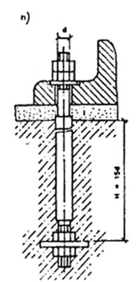
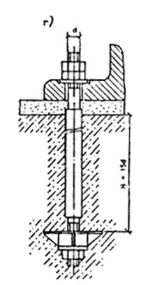
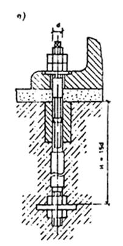
Рис. 1. Болты, устанавливаемые в фундаменты до бетонирования
а - изогнутые; б, в, г - с анкерной плитой; д, е - составные с анкерной плитой
Болты съемные, устанавливаемые после бетонирования фундаментов в специальные анкерные устройства, заранее предусмотренные в теле фундамента, приведены на рис. 2.
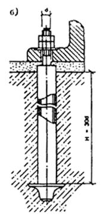
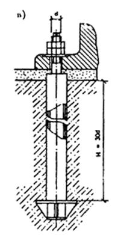
Рис. 2. Болты съемные, устанавливаемые после бетонирования фундаментов
а - с плоской анкерной плитой (М12-М48); б - с литой анкерной плитой (М56-М125); в - со сварной анкерной плитой (М56-М100)
Болты изогнутые, устанавливаемые в колодцах, приведены на рис 3.
Рис. 3. Болты, устанавливаемые в "колодцах", заранее предусмотренных в фундаментах
Болты прямые, устанавливаемые в просверленные скважины готовых фундаментов и закрепляемые синтетическим клеем (эпоксидным, силоксановым) или с помощью цементно-песчаной смеси методом виброзачеканки, приведены на рис. 4.
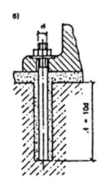
Рис. 4. Болты прямые, устанавливаемые в просверленные скважины готовых фундаментов
а - закрепляемые синтетическим клеем (а. с. № 209305); б - закрепляемые с помощью цементно-песчаной смеси способом виброзачеканки (а. с. № 419305)
Болты распорного типа с коническим концом, устанавливаемые в просверленные скважины готовых фундаментов и закрепляемые с помощью разжимных цанг или цементно-песчаным раствором способом вибропогружения, приведены на рис. 5.
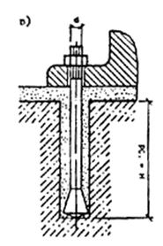
Рис. 5. Болты, распорного типа с коническим концом, устанавливаемые в просверленные скважины готовых фундаментов
а - закрепляемые с
помощью разжимной цанги (а. с. № 539170); б, в - закрепляемые цементно-песчаным
раствором способом вибропогружения (а. с. № 737573 и а. с. № 763525)
Распорные дюбели (далее дюбели), устанавливаемые в просверленные скважины строительных элементов (стены, колонны и т.п.) и закрепляемые с помощью распорных устройств, приведены на рис. 6.
Рис. 6. Дюбели распорные, устанавливаемые в просверленные скважины готовых конструкций
а, б - дюбель-шпильки
распорные (М8-М24) (а. с. №1225936); в - дюбель-втулка, распорная (М6-М20);
1 - распорная шпилька; 2 - разжимная цанга; 3 - гайка; 4 - распорная втулка; 5
- разжимная пробка; 6 - крепежный болт
2.3. По условиям эксплуатации болты подразделяются на расчетные и конструктивные.
К расчетным относятся болты, воспринимающие нагрузки, возникающие при эксплуатации строительных конструкций или работы оборудования.
К конструктивным относятся болты, предусматриваемые для крепления строительных конструкций и оборудования, устойчивость которых против опрокидывания или сдвига обеспечивается собственным весом конструкции или оборудования. Конструктивные болты предназначаются для рихтовки строительных конструкций и оборудования во время их монтажа и для обеспечения стабильной работы конструкций и оборудования во время эксплуатации, а также для предотвращения их случайных смещений.
Уровень динамичности устанавливается в зависимости от типа и характера оборудования.
2.4. Болты для крепления конструкций и оборудования должны изготавливаться в соответствии с ГОСТ 24379.0 "Болты фундаментные. Общие технические условия" и ГОСТ 24379.1 "Болты фундаментные. Конструкция и размеры".
Классификация болтов в соответствии с указанными стандартами приведена в табл. 1.
Таблица 1
|
Тип болта |
Номинальный диаметр резьбы d, мм |
||||
|
1 |
а |
Изогнутые c анкерной плитой |
12-48 |
Тип. 1 |
Исполнение 1 |
|
б |
16-48 |
Тип. 2 |
Исполнение 1 |
||
|
в |
56-140 |
Исполнение 2 |
|||
|
г |
100-140 |
Исполнение 3 |
|||
|
д |
Составные с анкерной плитой |
24-48 |
Исполнение 1 |
||
|
е |
56-64 |
Тип. 3 |
Исполнение 2 |
||
|
2 |
а |
Съемные с анкерным устройством |
24-48 |
Исполнение 1 |
|
|
б |
56-125 |
Тип. 4 |
Исполнение 2 |
||
|
в |
56-100 |
Исполнение 3 |
|||
|
3 |
Изогнутые в колодцах |
12-48 |
Тип. 1 |
Исполнение 2 |
|
|
4 |
Прямые на клею и с цементно-песчаной виброзачеканкой |
12-48 |
Тип. 5 |
- |
|
|
5 |
а |
С коническим концом |
12-48 |
Тип. 6 |
Исполнение 1 |
|
б |
Исполнение 2 |
||||
|
в |
Исполнение 3 |
||||
2.5. Болты изогнутые (см. рис. 1, а) предназначаются для крепления строительных конструкций и технологического оборудования в тех случаях, когда высота фундамента не зависит от глубины заделки болтов в бетон.
2.6. Болты с анкерной плитой (см. рис. 1, б, в, г), имеющие меньшую глубину заделки по сравнению с болтами изогнутыми, рекомендуется применять в тех случаях, когда высота фундамента определяется глубиной заделки болтов в бетон.
2.7. Болты составные с анкерными плитами (см. рис. 1, д, е) применяются в случаях установки оборудования методом поворота или надвижки (например, при монтаже вертикальных цилиндрических аппаратов химической промышленности). В этих случаях муфта и нижняя шпилька с анкерной плитой устанавливается в массив фундамента во время бетонирования, а верхняя шпилька ввертывается в муфту на всю длину резьбы после установки оборудования через отверстия в опорных частях.
Длина ввинчивания шпильки в муфту должна быть не менее 1,6 диаметра резьбы болта.
2.8. Болты изогнутые и с анкерной плитой устанавливаются до бетонирования фундаментов на специальных кондукторных устройствах, строго фиксирующих их проектное положение в процессе бетонирования.
2.9. Болты съемные (см. рис. 2) рекомендуется применить главным образом для крепления тяжелого прокатного, кузнечно-прессового, электротехнического и другого оборудования, вызывающего большие динамические нагрузки, а также в тех случаях, когда болты в процессе эксплуатации оборудования подлежат возможной замене.
При установке съемных болтов в массив фундамента закладывается только анкерная арматура (анкерные устройства), а шпилька устанавливается свободно в трубе после устройства фундамента.
2.10. Болты изогнутые, устанавливаемые в "колодцах" готовых фундаментов (см. рис. 3) с последующим замоноличиванием колодца бетоном, рекомендуются для крепления оборудования и строительных конструкций в тех случаях, когда не могут быть установлены болты в просверленные скважины.
2.11. Болты прямые на синтетических клеях (эпоксидном или силоксановом) и закрепляемые с помощью цементно-песчаной смеси способом виброзачеканки (см. рис. 4) рекомендуются для крепления строительных конструкций и технологического оборудования с уровнем асимметрии цикла r ³ 0,6 - для болтов на синтетических клеях и r ³ 0,8 - для болтов на виброзачеканке.
Болты, закрепляемые с помощью эпоксидного клея, могут эксплуатироваться при расчетной температуре наружного воздуха до минус 40 °С и при нагреве бетона до 50 °С, болты, закрепляемые силоксановым клеем, - соответственно до минус 40 °С и до 100 °С.
2.12. Болты распорного типа, закрепляемые с помощью разжимной цанги (см. рис. 5, а), и распорные дюбели (см. рис. 6) предназначаются для крепления строительных конструкций и оборудования, испытывающих статические и вибрационные нагрузки (r ³ 0,9).
2.13. Болты с коническим концом, закрепляемые цементно-песчаным раствором способом вибропогружения (см. рис. 5, б, в), рекомендуются для крепления строительных конструкций и технологического оборудования, за исключением оборудования, вызывающего значительные динамические и ударные нагрузки (кузнечно-прессовое оборудование, прокатные клети, электродвигатели большой мощности и др.).
Примечание. Болты с коническим концом исполнения 2 изготовляются высадкой, исполнения 3 - навинчиванием конической втулки.
2.14. Болты, устанавливаемые в просверленные скважины готовых фундаментов, не допускается применять для крепления несущих колонн зданий, оборудованных мостовыми кранами, а также для высотных зданий и сооружений, для которых ветровая нагрузка является основной.
Для крепления указанных конструкций допускается применять болты с коническим концом, устанавливаемые способом вибропогружения.
При этом глубина заделки болтов должна быть не менее 20 d.
При мероприятиях, обеспечивающих надежность и долговечность анкеровки (увеличенная глубина заделки, дополнительные анкерующие устройства и т.д.), допускается крепление указанных конструкций болтами других типов, устанавливаемыми в просверленные скважины готовых фундаментов, по согласованию с организацией - разработчиком этих болтов.
2.15. Для крепления технологического оборудования допускается устанавливать в скважинах болты диаметром свыше 48 мм при соответствующем технико-экономическом обосновании и при наличии бурового оборудования.
2.16. Распорные дюбели предназначаются для закрепления главным образом сантехнического, электротехнического и вентиляционного оборудования, а также элементов отделки, облицовки и пр.
Конструкции и размеры распорных дюбелей приведены в прил. 1.
2.17. Дюбели предназначаются для конструктивного закрепления различного мелкого оборудования, а также металлоконструкций, деталей декоративной отделки и других элементов на фундаментах, стенах и других строительных конструкциях из бетона, железобетона и кирпича.
Техническая документация на дюбели разработана ВНИИмонтажспецстроем.
2.18. Узлы крепления болтами с разжимной цангой и распорными дюбелями допускается вводить в эксплуатацию сразу после установки болтов и дюбелей.
3. Расчет болтов
3.1. Нагрузки, действующие на болты, по характеру воздействия подразделяются на статические и динамические. Величина, направление и характер действующих нагрузок от оборудования на болты должны быть указаны в задании на проектирование фундаментов под оборудование.
3.2. Мака сталей расчетных болтов, эксплуатируемых при расчетной зимней температуре наружного воздуха до минус 65 °С включительно, должна назначаться в соответствии с указаниями табл. 2.
Таблица 2
|
От -40 °С и выше |
От -40 до -50 °С |
От -51 до -65 °С |
|
|
марка стали |
ВСт3кп2, ВСт3пс2, Ст20 |
09Г2С-6, 10Г2С1-6 |
09Г2С-8, 10Г2С1-8 |
Примечание. Болты допускается изготовлять из других марок сталей, механические свойства которых не ниже свойств сталей марок, указанных в табл. 2.
3.3. Болты для крепления строительных конструкций при температуре наружного воздуха от минус 40 °С и выше должны изготовляться из углеродистой стали марки ВСт3кп2 (ГОСТ 380), а для крепления оборудования - из углеродистой стали марки ВСт3пс2 (ГОСТ 380) или из конструкционной стали марки Ст20 (ГОСТ 1050).
Для болтов диаметром 56 мм и более допускается применять при тех же температурных условиях низколегированную сталь марок 09Г2С-2 и 10Г2С1-2 (ГОСТ 19281).
3.4. Для крепления сосудов и аппаратов, предназначенных для обработки и хранения взрывоопасных продуктов, а также для крепления аппаратов колонного типа при расчетной зимней температуре наружного воздуха до минус 30 °С включительно, следует применять сталь марки ВСт3пс3 (вместо стали марки ВСт3пс2); при температуре наружного воздуха от минус 31 до 40 °С - сталь марки Ст20 по ГОСТ 1050.
3.5. При расчетной зимней температуре наружного воздуха до минус 65 °С низколегированные марки сталей 09Г2С-8 и 10Г2С1-8 должны иметь ударную вязкость не ниже 30 Дж/см2 (3 кгс×м/см2) при температуре испытания минус 60 °С.
3.6. Конструктивные болты во всех случаях допускается изготовлять из стали марки ВСт3кп2 по ГОСТ 380.
3.7. Расчетные сопротивления металла болтов растяжению Rва следует принимать по табл. 3.
Таблица 3
|
Расчетное сопротивление металла растяжению Rва, МПа |
|||
|
ВСт3пс2, ВСт3кп2, Ст20 |
09Г2С |
10Г2С1 |
|
|
10-30 |
145 |
185 |
190 |
|
36-56 |
145 |
180 |
180 |
|
64-80 |
145 |
175 |
170 |
|
90-100 |
145 |
170 |
170 |
|
110-140 |
145 |
170 |
165 |
3.8. Все болты должны быть затянуты на величину предварительной затяжки F, которая для статических нагрузок должна приниматься равной: f = 0,75 Р, для динамических нагрузок F = 1,1р, где Р - расчетная нагрузка, действующая на болт.
Для строительных конструкций (стальных колонн зданий и т.п.) затяжку болтов допускается осуществлять стандартными ручными инструментами с предельным усилием (до упора) на болт.
Asa = ко Р/Rва, (1)
где ко = 1,35 - для динамических нагрузок; ко = 1,05 - для статических нагрузок.
Для съемных болтов с анкерными плитами, устанавливаемых свободно в трубе, коэффициент ко для динамических нагрузок принимается равным 1,15.
3.10. При действии динамических нагрузок сечение болтов, вычисленное по формуле (1), следует проверить на выносливость по формуле
Asa = 1,8 c m Р/a Rва (2)
где c - коэффициент нагрузки, принимаемый по табл. 4, зависящий от конструкции болта; m - коэффициент, учитывающий масштабный фактор, принимаемый по табл. 5, в зависимости от диаметра болта; a - коэффициент, учитывающий число циклов нагружения, принимаемый по табл. 6.
Таблица 4
|
С отгибом |
С анкерной плитой |
Прямые |
Конические (распорные) |
||
|
Диаметр болтов (по резьбе) d, мм |
12-48 |
Глухих 12-140 |
Съемных 56-125 |
12-48 |
6-48 |
|
1 |
2 |
3 |
4 |
5 |
6 |
|
Эскизы |
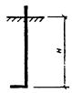 |
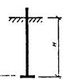 |
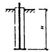 |
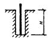 |
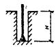 |
|
Глубина заделки Н принята из условия Rва = 145 МПа |
|||||
|
Минимальная глубина заделки Н |
25 d |
15 d |
30 d |
10 d |
10 d (8d)* |
|
Минимальное расстояние между осями болтов |
6 d |
8 d |
10 d |
5 d |
8 d |
|
Минимальное расстояние от оси болтов до грани фундамента |
4 d |
6 d |
6 d |
5 d |
8 d |
|
Коэффициент нагрузки c |
0,4 |
0,4 |
0,25 |
0,6 |
0,55 |
|
Коэффициент стабильности затяжки к |
1,9 (1,3)** |
1,9 (1,3) |
1,5 |
2,5 (2) |
2,3 (1,8) |
* В скобках дана глубина заделки для болтов диаметром менее 16 мм.
* В скобках даны значения коэффициента к статических нагрузок.
Таблица 5
|
10-12 |
16 |
20-24 |
30-36 |
42-48 |
56-72 |
80-90 |
100-125 |
140 |
|
|
m |
0,9 |
1 |
1,1 |
1,3 |
1,6 |
1,8 |
2 |
2,2 |
2,5 |
Таблица 6
|
0,05×106 |
0,2×106 |
0,8×106 |
2×106 |
5×106 и более |
|
|
a |
3,15 |
2,25 |
1,57 |
1,25 |
1 |
3.11. При расчете креплений строительных конструкций усилие предварительной затяжки и площадь сечения болтов следует определять как для статических нагрузок, если в проекте нет специальных указаний.
3.12. При групповой установке болтов для крепления оборудования (рис. 7) величина расчетной нагрузки Р, приходящаяся на один болт, должна определяться для наиболее нагруженного болта по формуле
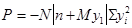
где N - расчетная нормальная сила; М - расчетный изгибающий момент; n - общее количество болтов; y1 - расстояние от оси поворота до наиболее удаленного болта в растянутой зоне стыка; yi - расстояние от оси поворота до i-го болта, при этом учитываются как растянутые, так и сжатые болты.
Рис. 7. Расчетная схема определения усилий при групповой установке болтов для крепления технологического оборудования
Ось поворота, допускается принимать проходящей через центр тяжести опорной поверхности оборудования.
3.13. Для сквозных стальных колонн, имеющих раздельные базы, величину расчетной растягивающей нагрузки, приходящейся на один болт, следует определять по формуле
Р = (М - Nв)/nh, (4)
где М и N - изгибающий момент и продольная сила в сквозной колонне на уровне верха фундамента; h - расстояние между осями ветвей колонны; n - количество болтов крепления ветви колонны; в - расстояние от центра тяжести сечения колонны до оси сжатой ветви.
3.14. Для баз стальных колонн сплошного типа (рис. 8) величину расчетной нагрузки, приходящейся на один растянутый болт, следует определять по формуле
Р = (Rв вs x - N)/n, (5)
где N - продольная сила в колонне; Rв - расчетное сопротивление бетона фундамента осевому сжатию, принимается в зависимости от класса бетона по табл. 7; n - количество растянутых болтов, расположенных с одной стороны базы колонны; вs - ширина опорной плиты базы колонны; x - высота сжатой зоны бетона под опорной плитой базы колонны, определяется по формуле
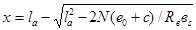
где la - расстояние от равнодействующей усилий в растянутых болтах до противоположной грани плиты; С - расстояние от оси колонны до оси болта; е0 - эксцентриситет приложения нагрузки.
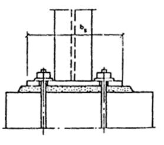
Рис. 8. Расчетная схема усилий в опорном сечении для стальных колонн сплошного типа
Таблица 7
|
Класс бетона |
В10 |
В12,5 |
В15 |
В20 |
В25 |
В30 |
|
Rв, МПа |
5,8 |
7,3 |
8,7 |
11,5 |
14,5 |
17 |
Высота сжатой зоны х ограничивается условием
х £ xR la, (7)
где
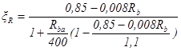
В формуле (8) Rв и Rва в МПа.
В тех случаях, когда х > xR la, следует повысить класс бетона фундамента либо увеличить опорную плиту, либо предусмотреть косвенное армирование.
3.15. Величину усилия предварительной затяжки болтов - для восприятия горизонтальных (сдвигающих) усилий в плоскости сопряжения оборудования с фундаментом для сдвигоустойчивых соединений (не допускающих смещения опорной конструкции на величину зазора между стержнем болта и стенками отверстия в стакане) следует определять по формуле
F1 = к (Q - Nf)/nf, (9)
где Q - расчетная сдвигающая сила, действующая в опорной плоскости; N - нормальная сила; f - коэффициент трения, принимаемый равным 0,25; n - количество болтов; к - коэффициент стабильности затяжки, принимаемый по табл. 4.
3.16. При совместном действии вертикальных и горизонтальных (сдвигающих) сил величину усилия затяжки F0 следует определять по формуле
F0 = F + F1/к. (10)
Площадь поперечного сечения болта по резьбе в этом случае определяется по формуле
Аsa = (к ко Р + F1)/к Rва, (11)
где к - коэффициент стабильности затяжки, принимаемый по табл. 4.
3.17. В сдвигодопускающих соединениях сдвигающая сила Q воспринимается за счет сопротивления стержня болта срезу и определяется по формуле
Q £ 0,6 Аsa Rва n. (12)
При совместном действии осевых Р и сдвигающих Q усилий их допустимые величины могут быть определены по формулам:
Р £ 0,6 Аsa Rва n; (13)
Q £ 0,4 Аsa Rва n; (14)
где n - количество болтов.
Величина усилия предварительной затяжки болтов F2 в этом случае должна назначаться по формуле
F2 = к Аsa Rва/2. (15)
3.18. Сдвигающую силу Q, действующую в плоскости изгибающего момента, для сквозных стальных колонн, имеющих раздельные базы под ветви колонны, допускается воспринимать силой трения под сжатой ветвью колонны и определять из условия
Q £ f [M + N (h - в)]/h, (16)
где обозначения те же, что в формуле (4).
Сдвигающую силу стальных колонн сплошного типа, а также для сквозных колонн при действии сдвигающей силы перпендикулярно плоскости изгибающего момента (связевые колонны) допускается воспринимать силой трения от действия продольной силы и силы затяжки болтов и определять по формуле
Q £ f (п Аsa Rва/4 + N), (17)
где N - минимальная продольная сила, соответствующая нагрузкам, от которых определяется сдвигающая сила; п - количество болтов для крепления сжатой ветви колонны или количество сжатых болтов, расположенных с одной стороны базы колонн (для колонн сплошного типа); f - коэффициент трения, принимаемый равным 0,25; Аsa - площадь сечения одного болта.
3.19. Болты необходимо затягивать, как правило, с контролем величины крутящего момента Мкр, Н×м, значение которого следует определять по формуле
Мкр = F x, (18)
где F - усилие предварительной затяжки болтов; x - коэффициент, учитывающий геометрические размеры резьбы, трение на торце гайки и в резьбе, принимаемый по табл. 8.
Таблица 8
|
x, м |
Диаметр болта, мм |
x, м |
|
|
10 |
2×10-3 |
20 |
4,4×10-3 |
|
12 |
2,4×10-3 |
24 |
5,8×10-3 |
|
16 |
3,2×10-3 |
30 |
7,5×10-3 |
|
36 |
9×10-3 |
80 |
2,1×10-2 |
|
42 |
1,1×10-2 |
90 |
2,3×10-2 |
|
48 |
1,2×10-2 |
100 |
2,5×10-2 |
|
56 |
1,4×10-2 |
110 |
2,8×10-2 |
|
64 |
1,7×10-2 |
125 |
3,2×10-2 |
|
72 |
1,9×10-2 |
140 |
3,5×10-2 |
3.20. Минимальную глубину заделки болтов из стали марки ВСт3кп2 в фундаменте (размер Н) для бетона класса В12,5 следует принимать по табл. 4.
При других марках сталей болтов или другом классе бетона глубину заделки Но следует определять по формуле
Но ³ Н т1 т2, (19)
где т1 - отношение расчетного сопротивления растяжению бетона класса В12,5 к расчетному сопротивлению бетона принятого класса; т2 - отношение расчетного сопротивления растяжению металла болтов принятой марки стали к расчетному сопротивлению растяжению стали марки ВСт3кп2.
Для болтов диаметром 24 мм и более, устанавливаемых в скважинах готовых фундаментов, коэффициент т1 следует принимать равным единице.
Значения расчетных сопротивлений бетона растяжению Rвt в зависимости от класса бетона даны в табл. 9.
Таблица 9
|
В10 |
В12,5 |
B15 |
В20 |
B25 |
В30 |
|
|
Rвt, МПа |
0,61 |
0,7 |
0,8 |
0,95 |
1,1 |
1,2 |
Для тех же материалов минимальную глубину заделки дюбель-втулки распорной (см. рис. 6, в) следует принимать H = 6 d, с учетом величин следующих расчетных параметров: коэффициента нагрузки c = 0,4; коэффициента стабильности затяжки к = 1,3 (при динамических воздействиях к = 1,9); расстояния между осями дюбелей - не менее 5 d, от края фундамента до оси дюбеля - 6 d.
3.21. Глубина заделки распорных дюбелей, устанавливаемых в мягкие материалы (кирпич, керамзитобетон), должна быть увеличена на 2 d по сравнению с глубиной заделки аналогичных дюбелей, устанавливаемых в конструкции из бетона класса В12,5.
3.22. Для конструктивных болтов с отгибами глубину заделки в бетон допускается принимать равной 15 d, для болтов с анкерными плитами - 10 d, а для болтов, устанавливаемых в скважины, - 5 d.
3.23. Наименьшие допустимые расстояния между осями болтов и от оси крайних болтов до граней фундамента приведены в табл. 4.
Расстояния между болтами, а также от оси болтов до грани фундамента допускается уменьшать на 2 d при соответствующем увеличении глубины заделки на 5 d.
Расстояния от оси болта до грани фундамента допускается уменьшить еще на один диаметр при наличии специального армирования вертикальной грани фундамента в месте установки болта.
Во всех случаях расстояние от оси болта до грани фундамента не должно быть меньше 100 мм для болтов диаметром до 30 мм включительно, 150 мм для болтов диаметром до 48 мм и 200 мм для болтов диаметром более 48 мм.
3.24. При установке спаренных болтов, например для закрепления несущих стальных колонн зданий и сооружений, должна предусматриваться общая анкерная плита с расстоянием между отверстиями, равным проектному размеру между осями болтов, или следует устанавливать одиночные болты с "разбежкой" по глубине. Глубину заделки спаренных болтов при расстоянии между их осями 8 d и более следует назначать 15 d, при расстоянии менее 8 d - равной 20 d.
Расстояние от края плиты до оси болта следует назначать не менее 2 d, при этом площадь анкерной плиты должна быть не менее 32 d2.
3.25. Расчетные площади поперечных сечений болтов (по резьбе) в зависимости от их диаметра приведены в табл. 10.
Таблица 10
|
Расчетная площадь поперечного сечения болтов по резьбе Аsa, см2 |
Диаметр резьбы болтов d |
Расчетная площадь поперечного сечения болтов по резьбе Аsa, см2 |
|
|
М 10 |
0,571 |
М 24 |
3,52 |
|
М 12 |
0,842 |
М 30 |
5,60 |
|
М 16 |
1,57 |
М 36 |
8,26 |
|
М 20 |
2,45 |
М 42 |
11,2 |
|
М 48 |
19,72 |
М 90´6 |
55,91 |
|
М 56 |
20,29 |
М 100´6 |
69,95 |
|
М 64 |
26,75 |
М 110´6 |
85,56 |
|
М 72´6 |
34,58 |
М 125´6 |
111,91 |
|
М 80´6 |
43,44 |
М 140´6 |
141,81 |
3.26. Диаметры конструктивных болтов должны быть указаны в задании на проектирование фундаментов. При отсутствии указаний диаметры конструктивных болтов назначаются в соответствии с диаметром отверстий в опорных частях оборудования.
Примеры расчета болтов даны в прил. 2 настоящего Пособия.
4. Образование скважин в бетоне и железобетоне
4.1. Образование скважин в бетоне и железобетоне производится механизированным инструментом, технические характеристики которого приведет в прил. 3 настоящего Пособия.
4.2. Образование скважин в бетоне и железобетоне следует производить по разметке либо через отверстия под фундаментные болты в станинах предварительно выверенного оборудования.
4.3. Разметка мест установки болтов производится: а) общепринятыми методами геодезической разбивки, при этом рекомендуется оси оборудования и оси отверстий намечать керном по масляной краске; б) по шаблону (снятого с анкер-плана) с использованием его как кондуктора; в) путем предварительной установки оборудования с накерниванием мест расположения болтов через отверстия в станине.
4.4. Разметка отверстий должна производиться в строгом соответствии с размерами на чертежах.
Погрешность разметки отверстий под болты должна быть не более 50 % величины допускаемых отклонений расположений осей фундаментных болтов.
Точность разметки осей отверстий должна быть не ниже величины, определяемой следующей зависимостью:
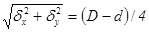
где dх и dу - величины отклонений от номинальных размеров, координирующих положение оси отверстий; D - диаметр отверстия под болт в станине оборудования; d - диаметр фундаментного болта.
4.5. Технология образования скважин должна отвечать требованиям действующих технических условий на производство работ и правилам техники безопасности.
4.6. Для образования скважин диаметром более 60 мм пневмоперфораторами бурение рекомендуется производить в два этапа. Сначала просверливается скважина диаметром 50-60 мм, а затем - требуемого диаметра.
4.7. Бурение скважин в железобетоне с верхним армированием при необходимости может производиться с прорезкой арматуры, попавшей в сечение скважины, при помощи кислородно-ацетиленовых резаков или электродуговым способом.
4.8. Для сверления скважин под конические болты и дюбели (см. рис. 5, 6) следует применять электро- и пневмоперфораторы или сверлильные машины, оснащенные алмазными кольцевыми сверлами.
4.9. При сверлении алмазными коронками и коронками, оснащенными твердыми сплавами, необходима подача воды для охлаждения в зону резания. расход воды зависит от диаметра пробуриваемой скважины. При диаметре скважины до 25 мм расход воды составляет 1,5 л/мин, а при диаметре более 25 мм - до 2,5 л/мин.
4.10. Диаметр скважины для прямых болтов на синтетических клеях (эпоксидном или силоксановом) должен быть на 8-12 мм больше диаметра болта.
4.11. Диаметр скважин для прямых болтов, закрепляемых с помощью цементно-песчаной смеси способом виброзачеканки, определяется размерами уплотнительного устройства (см. прил. 5).
4.12. Диаметр скважин для конических болтов, закрепляемых с помощью разжимной цанги, и допустимые отклонения размеров скважин принимаются по табл. 11.
Таблица 11
|
12 |
16 |
20 |
24 |
30 |
36 |
42 |
48 |
|
|
Диаметр скважины, мм |
16 |
22 |
28 |
32 |
40 |
50 |
60 |
68 |
|
Допустимые отклонения, мм |
+1 |
+1,5 |
+2 |
|||||
4.13. Диаметр скважин для конических болтов, закрепляемых цементно-песчаным раствором методом вибропогружения, определяется диаметром коронок Dкор для сверления скважин и принимается в соответствии с табл. 12.
Таблица 12
|
12 |
16 |
20 |
24 |
30 |
36 |
42 |
48 |
|
|
Диаметр коронки Dкор (диаметр скважины), мм |
30 |
30 |
40 |
43 |
52 |
60 |
70 |
80 |
4.14. Размеры колодцев для изогнутых болтов должны приниматься в соответствии с табл. 13.
Таблица 13
|
Эскиз колодца |
Диаметр болтов, мм |
Размеры колодца, мм |
|
|
В |
L |
||
|
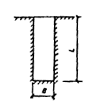 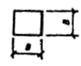 |
12 |
100 |
300 |
|
16 |
400 |
||
|
20 |
150 |
500 |
|
|
24 |
600 |
||
|
30 |
200 |
750 |
|
|
36 |
900 |
||
|
42 |
250 |
1050 |
|
|
48 |
1200 |
||
Расстояние от грани колодца до наружной грани фундамента должно быть не менее 50 мм для болтов диаметром от 12 до 24 мм и 100 мм - для болтов диаметром от 30 до 48 мм.
Допускается изготовление круглых колодцев путем их высверливания в готовых фундаментах алмазными инструментами. Диаметр колодца должен приниматься равным размеру В.
4.15. Диаметр скважины под дюбели определяется размерами сверлильного (режущего) инструмента, который принимается по наружному диаметру конструктивных элементов болта.
5. Установка болтов
5.1. Болты изогнутые и с анкерными плитами (см. рис. 1), а также анкерная арматура съемных болтов (см. рис. 2) должны устанавливаться в фундамент до бетонирования на специальных кондукторах, строго фиксирующих и обеспечивающих проектное положение болтов и анкерной арматуры при бетонировании фундамента.
В этих случаях рекомендуется применять съемные кондукторы и объединять болты в блоки, а также использовать плазово-блочные методы установки болтов и другие мероприятия, направленные на снижение расхода металла и повышение точности установки.
5.2. При расположении изогнутых болтов у края фундамента отогнутый конец болта необходимо ориентировать в сторону массива, а при расположении в углах - по их биссектрисе.
Нижние концы болтов, расположенные в местах пустот фундаментов (проемов, тоннелей и др.), допускается выполнять изогнутыми (рис. 9), при этом угол изгиба болтов к вертикали должен составлять не более 45°, а длина прямого участка у начала заделки l принимается не менее 0,5 Н.
Рис. 9. Виды гнутых болтов и установка их в фундаментах
5.3. При установке составных болтов (см. рис. 1, д, е) нижняя шпилька совместно с муфтой и анкерной плитой устанавливается до бетонирования фундамента, а верхняя шпилька ввертывается в муфту и прихватывается сваркой после установки оборудования, которое монтируется методом поворота или подвижки.
5.4. Установка болтов на эпоксидном клее может производиться при температуре наружного воздуха от минус 20 °С и выше, на силоксановом клее от 10 °С и выше.
Толщину клеевого слоя следует принимать от 4 до 6 мм.
Равномерность толщины клеевого слоя должна обеспечиваться установкой фиксирующих колец из холоднотянутой арматурной проволоки. Нижнее кольцо устанавливается в скважину до заливки клея, верхнее - после установки болта.
Составляющие эпоксидного клея (за исключением песка) являются токсичными веществами, и при работе с ними необходимо соблюдать требования по технике безопасности и производственной санитарии при работе с эпоксидными смолами, предъявляемые органами государственного санитарного надзора.
Технологическая схема установки болтов на синтетическом клее приведена на рис. 10.
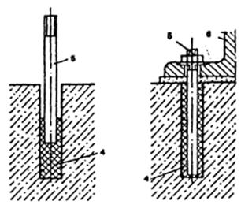
Рис. 10. Технологическая схема установки болтов на клею
1 - коронка буровая; 2 - штанга буровая; 3 - дозатор; 4 - клей; 5 - болт; 6 - оборудование
Состав и технология приготовления синтетического клея (эпоксидного и силоксанового), а также рекомендации по установке болтов даны в прил. 4.
5.5. Виброзачеканка прямых болтов жесткой цементно-песчаной смесью осуществляется в кольцевой зазор между болтом и поверхностью скважины с помощью специального уплотнительного устройства. Критерием качественного уплотнения смеси служит самопроизвольный подъем виброуплотнителя из скважины на поверхность. Установку болтов способом виброзачеканки при температуре наружного воздуха ниже минус 20 °С производить не следует.
Технологическая схема установки болтов способом виброзачеканки приведена на рис. 11.
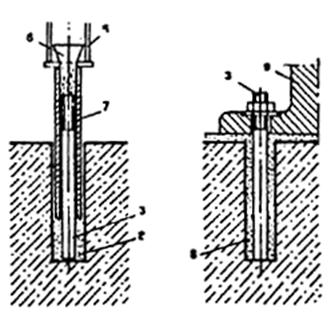
Рис. 11. Технологическая схема установки болтов способом виброзачеканки
1 - коронка буровая; 2 - штанга буровая; 3 - болт; 4 - вибратор; 5 - удлинитель; 6 - воронка; 7 - уплотнитель; 8 - цементно-песчаная смесь; 9 - оборудование
Состав и технология приготовления цементно-песчаной смеси, а также рекомендации по установке болтов даны в прил. 5.
5.6. Распорные болты с разжимной цангой закрепляются в скважинах с помощью съемных инвентарных монтажных трубок, которые служат для распора цанг (рис. 12). После закрепления болта в скважине трубка снимается.
Рис. 12. Установка распорного болта с разжимной цангой с помощью съемной инвентарной монтажной трубки
1 - коническая шпилька; 2 - разжимная цанга; 3 - инвентарная монтажная трубка; 4 - шайба; 5 - гайка
Вытяжка болта при его закреплении не должна превышать 1,5 d, где d - диаметр болта.
5.7. При наличии производственной агрессивной среды (масляной, кислотной и др.), а также при закреплении оборудования с динамическими воздействиями скважины для конических болтов с разжимной цангой следует залить цементным раствором после предварительной затяжки болтов.
5.8. Установка и закрепление конических болтов (см. рис. 5, б, в) цементно-песчаной смесью осуществляются путем вибропогружения болтов в скважины, заполненные раствором на 2/3 их глубины.
Вибропогружение болтов, как правило, осуществляется теми же инструментами, которыми сверлятся скважины с применением, в случае необходимости, переходных устройств (зажимов), или с помощью других сверлильных инструментов, создающих поступательно-вращательное движение.
Для обеспечения проектного положения болтов до схватывания раствора в верхней части скважины устанавливаются фиксаторы из проволочных колец, клиньев и др.
Технологическая схема установки болтов способом вибропогружения приведена на рис. 13.
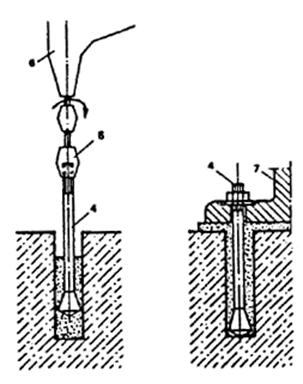
Рис. 13. Технологическая схема установки болтов способом вибропогружения
1 - коронка буровая; 2 - штанга буровая; 3 - цементно-песчаная смесь; 4 - болт; 5 - переходник; 6 - вибропогружатель; 7 - оборудование
Состав и технология приготовления цементно-песчаного раствора, а также рекомендации по установке болтов даны в прил. 6.
5.9. Установка и закрепление изогнутых болтов в колодцы осуществляется бетоном класса В15 на мелкозернистом заполнителе.
5.10. Установка распорных дюбель-втулок осуществляется посредством осаживания их в просверленные скважины и последующей забивки металлических разжимных пробок с помощью специальных оправок.
Технологическая схема установки распорных дюбель-втулок приведена на рис. 14.
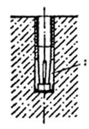
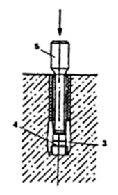
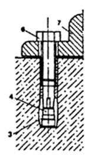
Рис. 14. Технологическая схема установки дюбель-втулки распорной
1 - коронка буровая; 2 - штанга буровая; 3 - распорная втулка; 4 - разжимная пробка; 5 - оправка; 6 - крепежный болт; 7 - оборудование
5.11. Отклонения осей забетонированных болтов, анкерной арматуры и болтов, устанавливаемых на готовых фундаментах, от проектного положения не должны превышать ±2 мм в плане и ±10 мм по высоте.
5.12. Отклонения от проектного положения осей колодцев для изогнутых болтов не должны превышать ±10 мм.
5.13. Максимальная величина допустимого смещения верхнего конца болта при изгибе не должна превышать 2 d. При этом деформации изгиба болта допустимы только вне его резьбовой части.
6. Выверка оборудования и конструкций
Способы опирания оборудования на фундамент
6.1. Установка оборудования на фундамент осуществляется следующим способом:
а) с выверкой и закреплением на постоянных опорных элементах и последующей подливкой бетонной смесью зазора "оборудование - фундамент" (рис. 15, б);
б) с выверкой на временных опорных элементах, подливкой зазора "оборудование - фундамент" и с опиранием при закреплении на массив затвердевшего материала подливки (бесподкладочный монтаж, рис. 15, а).
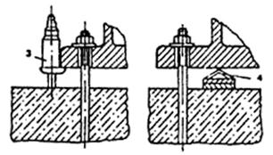
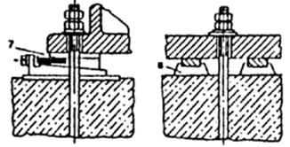
рис. 15. Опорные элементы для выверки и установки оборудования
а - временные; б - постоянные; 1 - отжимные регулировочные винты; 2 - установочные гайки с тарельчатыми пружинами; 3 - инвентарные домкраты; 4 - облегченные металлические подкладки; 5 - пакеты металлических подкладок; 6 - клинья; 7 - опорные башмаки; 8 - жесткие опоры
При первом способе опирания оборудования передача монтажных и эксплуатационных нагрузок на фундамент осуществляется через постоянные опорные элементы, а подливка имеет вспомогательное, защитное или конструктивное назначение.
При необходимости регулировки положения оборудования в процессе эксплуатации подливка может не производиться, что должно предусматриваться инструкцией при монтаже.
6.3. При опирании оборудования на бетонную подливку эксплуатационные нагрузки от оборудования передаются на фундаменты непосредственно через подливку.
6.4. Конструкция стыков указывается в монтажных чертежах или в инструкции на монтаж оборудования.
При отсутствии специальных указаний в инструкциях завода-изготовителя оборудования или в проекте фундамента конструкция стыка и тип опорных элементов назначаются монтажной организацией.
Выверка оборудования
6.5. Выверку оборудования (установку в проектное положение относительно заданных осей и отметок) осуществляют поэтапно с достижением заданных показателей точности в плане, а затем по высоте и горизонтальности (вертикальности).
Отклонения установленного оборудования от номинального положения не должны превышать допусков, указанных в заводской технической документации и в инструкциях на монтаж отдельных видов оборудования.
6.6. Выверку оборудования по высоте производят относительно рабочих реперов либо относительно ранее установленного оборудования, с которым выверяемое оборудование связано кинематически или технологически.
6.7. Выверку оборудования в плане (с заранее установленными болтами) производят в два этапа: сначала совмещают отверстия в опорных частях оборудования с болтами (предварительная выверка), затем производят введение оборудования в проектное положение относительно осей фундаментов или относительно ранее выверенного оборудования (окончательная выверка).
6.8. Контроль положения оборудования при выверке производят как общепринятыми контрольно-измерительными инструментами, так и оптико-геодезическим способом, а также с помощью специальных центровочных и других приспособлений, обеспечивающих контроль перпендикулярности, параллельности и соосности.
6.9. Выверку оборудования производят на временных (выверочных) или постоянных (несущих) опорных элементах.
В качестве временных (выверочных) опорных элементов при выверке оборудования до его подливки бетонной смесью используют: отжимные регулировочные винты; установочные гайки с тарельчатыми шайбами; инвентарные домкраты; облегченные металлические подкладки и др.
При выверке в качестве постоянных (несущих) опорных элементов, работающих и в период эксплуатации оборудования, используют: пакеты плоских металлических подкладок; металлические клинья; опорные башмаки; жесткие опоры (бетонные подушки).
6.10. Выбор временных (выверочных) опорных элементов и соответственно технологии выверки производится монтажной организацией в зависимости от веса отдельных монтажных блоков оборудования, устанавливаемых на фундамент, а также исходя из экономических показателей.
Количество опорных элементов, а также число и расположение затягиваемых при выверке болтов выбираются из условий обеспечения надежного закрепления выверенного оборудования на период его подливки.
А £ 6 n Аsa + G×15×10-5, (21)
где n - число фундаментных болтов, затягиваемых при выверке оборудования; Аsa - расчетная площадь поперечного сечения фундаментных болтов, м2; G - вес выверяемого оборудования, кН.
Суммарная грузоподъемность W, кН, временных (выверочных) опорных элементов определяется соотношением
W ³ 1,3 G + n Asa s0, (22)
где s0 - напряжение предварительной затяжки фундаментных болтов, кПа.
6.12. Временные опорные элементы следует располагать исходя из удобства выверки оборудования с учетом исключения возможной деформации корпусных деталей оборудования от собственного веса и усилий предварительной затяжки гаек болтов.
6.13. Постоянные (несущие) опорные элементы следует размещать на возможно близком расстоянии от болтов. При этом опорные элементы могут располагаться как с одной стороны, так и с двух сторон болта.
6.14. Закрепление оборудования в выверенном положении должно осуществиться путем затяжки гаек болтов в соответствии с рекомендациями разд. 8 настоящего Пособия.
6.15. Опорная поверхность оборудования в выверенном положении должна плотно прилегать к опорным элементам, отжимные регулировочные винты - к опорным пластинам, а постоянные опорные элементы - к поверхности фундамента. Плотность прилегания сопрягаемых металлических частей следует проверять щупом толщиной 0,1 мл.
6.16. Технология выверки оборудования с помощью регулировочных винтов, инвентарных домкратов, установочных гаек, а также на жестких бетонных подушках и металлических подкладках дана в прил. 7.
Подливка оборудования
6.17. Подливка оборудования должна осуществляться бетонной смесью, цементно-песчаными или специальными растворами после предварительной (для конструкций стыков на временных опорах) или после окончательной (для конструкций стыков на постоянных опорах) затяжки гаек болтов.
6.18. Толщина слоя подливки под оборудованием допускается в пределах 50-80 мм. При наличии на опорной поверхности оборудования ребер жесткости зазор принимается от низа ребер (рис. 16).
Рис. 16. Схема подливки под оборудование
1 - фундамент; 2 - подливка; 3 - опорная часть оборудования; 4 - ребро жесткости опорной части
6.19. Подливка в плане должна выступать за опорную поверхность оборудования не менее чем на 100 мм. При этом ее высота должна быть больше высоты основного слоя подливки под оборудованием не менее чем на 30 мм и не более толщины опорного фланца оборудования.
6.20. Поверхность подливки, примыкающая к оборудованию, должна иметь уклон в сторону от оборудования и должна быть защищена маслостойким покрытием.
6.21. Класс батона или раствора по прочности при опирании оборудования непосредственно на подливку должен приниматься на одну ступень выше класса бетона фундамента.
6.22. Поверхность фундаментов перед подливкой следует очистить от посторонних предметов, масел и пыли. Непосредственно перед подливкой поверхность фундамента увлажняют, не допуская при этом скопления воды в углублениях и приямках.
6.23. Производить подливку под оборудованием при температуре окружающего воздуха ниже 5 °С без подогрева укладываемой смеси (электроподогрев, пропаривание и т.п.) не разрешается.
6.24. Бетонную смесь или раствор подают через отверстия в опорной части или с одной стороны подливаемого оборудования до тех пор, пока с противоположной стороны смесь или раствор не достигнут уровня, на 30 мм превышающего высоту уровня опорной поверхности оборудования.
Подачу смеси или раствора следует производить без перерывов. Уровень смеси или раствора со стороны подачи должен превышать уровень подливаемой поверхности не менее чем на 100 мм.
Для подливки оборудования можно использовать пневмонагнетатели бетона типа С-862 или бетононасосы типа СБ-68.
6.25. Подачу бетонной смеси или раствора рекомендуется осуществлять вибрированием с применением лотка-накопителя. Вибратор при этом не должен касаться опорных частей оборудования. При ширине подливаемого пространства более 1200 мм установка лотка-накопителя обязательна (рис. 17).
Рис. 17. Подливка оборудования с помощью лотка-накопителя
1 - опалубка; 2 - опорная часть оборудования; 3 - лоток-накопитель; 4 - вибратор; 5 - подливочная смесь; 6 - фундамент
Длина лотка должна быть равна длине подливаемого пространства.
Опирание лотка на подливаемое оборудование не допускается.
Уровень бетонной смеси при подливке с лотком должен находиться выше опорной поверхности оборудования приблизительно на 300 мм и поддерживаться постоянным.
Для производства работ по подливке рекомендуется использовать вибраторы с гибким валом, например ИВ-34, ИВ-47, ИВ-56, ИВ-60, ИВ-65, ИВ-67 и др.
6.26. Поверхность подливки в течение трех суток после завершения работ необходимо систематически увлажнять, посыпать опилками или укрывать мешковиной.
6.27. При применении бетонной подливки размер крупного заполнителя должен быть не более 20 мм.
6.28. Подбор состава бетона производится в соответствии с действующими нормативными документами. Осадка конуса бетонной смеси должна быть не менее 6 см. Для улучшения свойств бетона подливы (уменьшения усадки, увеличения подвижности) рекомендуется вводить добавку СДБ в количество 0,2-0,3 % массы цемента. При введении СДБ расход цемента и воды ориентировочно снижается на 8-10 % при сохранении расчетного значения водоцементного отношения. В качестве подливки может быть использован пескобетон.
6.29. Для защиты подливки от коррозии в агрессивных средах следует применять покрытия в соответствии с требованиями главы СНиП 2.03.11.
Способы опирания стальных колонн
6.30. Опирание стальных колонн каркасов промышленных зданий с разделительными ветвями (решетчатого типа) осуществляется на заранее выверенные стальные опорные плиты, которые устанавливаются под каждую ветвь на бетонную подливку (рис. 18).
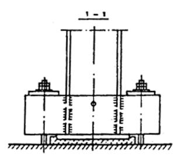
Рис. 18. Сопряжение стальных колонн решетчатого типа с фундаментом
Количество и расположение болтов назначается в зависимости от расчетных нагрузок и конструкции фундаментов. Схемы расположения болтов приведены на рис. 19.
Рис. 19. Схема расположения болтов для крепления стальных колонн решетчатого типа
6.31. Опирание стальных колонн сплошного типа каркасов промышленных зданий на фундамент осуществляется через стальную пластину, приваренную к колонне и устанавливаемую на фундаментные болты с выверочными гайками с последующим замоноличиванием опорного узла (рис. 20).
Рис. 20. Схема установки стальных колонн сплошного типа каркасов промышленных зданий
7. Затяжка болтов
7.1. При закреплении оборудования гайки болтов должны быть затянуты на величину усилия предварительной затяжки, указанной в технических условиях на монтаж оборудования. При отсутствии указанной величины крутящего момента при окончательной затяжке болта она не должна превышать указанной в табл. 14.
Таблица 14
|
10 |
12 |
16 |
20 |
24 |
30 |
36 |
42 |
48 |
|
|
Допускаемый максимальный крутящий момент М при затяжке конструктивных болтов, Н×м |
12 |
24 |
60 |
100 |
250 |
550 |
950 |
1500 |
2300 |
7.2. Для затяжки фундаментных болтов следует применять ручной или механизированный инструмент, а также специальные приспособления, указанные в прил. 8 настоящего Пособия. Вид инструмента должен быть указан в проекте производства работ.
7.3. Расчетные болты диаметром свыше 64 мм, как правило, следует затягивать путем предварительной вытяжки специальными гидравлическими ключами с контролем усилия по манометру или удлинению.
7.4. Затяжка болтов должна производиться равномерно. Для конструктивных болтов затяжка производится в два "обхода", для расчетных - не менее чем в три "обхода". Болты следует затягивать в шахматном порядке симметрично относительно осей оборудования.
7.5. Затяжка болтов при бесподкладочном способе монтажа оборудования (предварительная и окончательная) выполняется в два этапа. Окончательную затяжку следует производить после достижения прочности материала подливки не менее 70 %.
7.6. При работе оборудования со значительными динамическими нагрузками гайки болтов в необходимых случаях должны предохраняться от самоотвинчивания путем их стопорения.
Стопорение осуществляется с помощью: а) контргаек; б) пружинных шайб (по ГОСТ 6402); в) шайб стопорных с лапками (по ГОСТ 13463).
Необходимость установки контргаек, пружинных шайб и шайб стопорения зависит от типа и характера работы оборудования и должна быть указана в проекте оборудования.
7.7. После завершения цикла пусконаладочных работ и опробования оборудования гайки болтов следует подтянуть до расчетной величины усилия затяжки.
7.8. Контроль усилия затяжки может осуществляться по величине крутящего момента, по перемещению или удлинению болта, углу поворота гайки или по величине давления в гидросистеме специальных гидроключей.
7.9. Величина крутящего момента, приложенного к гайке конструктивного болта, назначается в соответствии с типом и характером оборудования, но не более величины, приведенной в табл. 14.
7.10. Расчетные болты затягиваются на величину крутящего момента Мкр, Н×м, который определяется по формуле (13).
7.11. Усилие затяжки съемных болтов, устанавливаемых в фундамент с изолирующей трубой (см. рис. 2), может контролироваться по величине удлинения шпильки d. Величина удлинения шпильки болта определяется по формуле
d = F (H + l)/E Asa, (23)
где H - глубина заделки болта, м; l - высота выступающей над фундаментом части болта до середины затянутой гайки, м; Е = 2×108 - модуль упругости материала болта, кПа.
7.12. Контроль окончательной величины усилия затяжки допускается осуществлять по углу поворота гайки.
Для болтов, устанавливаемых в фундаменты до бетонирования (изогнутые и с анкерной плитой), угол поворота гайки следует определять по формуле
, (24)
а для съемных болтов - по формуле
, (25)
где s - шаг резьбы.
7.13. При определении удлинения d болта следует пользоваться часовыми индикаторами, прецизионными нивелирами и другими приборами, обеспечивающими замеры с точностью не менее ±0,02 мм относительно ненагруженной поверхности фундамента.
Угол поворота гайки следует определять с помощью морных подкладок, шаблонов, транспортиров и других приспособлений, обеспечивающих точность измерений не менее ±5°.
7.14. Величину крутящего момента Мкр можно контролировать с помощью продольных и динамометрических ключей, указанных в прил. 8.
7.15. При применении редкоударных гайковертов типа ИЭ3112, ИЭ3115А, ИЭ3118 крутящий момент следует контролировать по времени работы гайковерта.
Приложение 1
Конструкции и размеры распорных дюбелей
1. Дюбель-шпилька распорная, тип 1
Таблица 1
|
Условное обозначение |
Размер, мм |
Масса, кг |
Расчетная нагрузка, кН |
|||
|
d |
D |
l |
L |
|||
|
ДШР 2-М8 |
М8 |
8,5 |
35 |
70 |
0,025 |
5 (2) |
|
ДШР 2-М10 |
М10 |
10,5 |
45 |
80 |
0,049 |
8 (3,3) |
|
ДШР 2-М12 |
М12 |
12,6 |
50 |
90 |
0,08 |
12 (5) |
|
ДШР 2-М16 |
М16 |
16,6 |
65 |
120 |
0,188 |
22 (9) |
|
ДШР 2-М20 |
М20 |
21 |
80 |
150 |
0,356 |
35 (15) |
|
ДШР 2-М24 |
М24 |
25 |
95 |
175 |
0,61 |
50 (20) |
Назначение: закрепление оборудования и металлоконструкций на строительных элементах из бетона и кирпича.
Материал: распорная шпилька - сталь марки ВСт3, ГОСТ 380; разжимная цанга - сталь марки 20, ГОСТ 1050.
Примечание. Расчетные нагрузки приведены для элементов из бетона класса В12,5 и выше, в скобках - для элементов из кирпича не ниже М75.
Рис. 1 прил. 1. Дюбель-шпилька распорная, тип 1
1 - распорная шпилька; 2 - разжимная цанга
2. Дюбель-шпилька распорная, тип 2
Таблица 2
|
Условное обозначение |
Размер, мм |
Масса, кг |
Расчетная нагрузка, кН |
||||
|
d |
D |
l1 |
l2 |
L |
|||
|
ДШП 1-М8 |
М8 |
10 |
35 |
50 |
70 |
0,028 |
5 |
|
ДШП 1-М10 |
М10 |
12 |
45 |
65 |
85 |
0,052 |
8 |
|
ДШП 1-М12 |
М12 |
15 |
50 |
70 |
100 |
0,089 |
12 |
|
ДШП 1-М16 |
М16 |
20 |
65 |
90 |
130 |
0,204 |
22 |
|
ДШП 1-М20 |
М20 |
24 |
80 |
110 |
160 |
0,392 |
35 |
|
ДШП 1-М24 |
М24 |
30 |
95 |
130 |
190 |
0,672 |
50 |
Назначение: закрепление оборудования и металлоконструкций на строительных элементах из бетона.
Материал: распорная шпилька - сталь марки ВСт3, ГОСТ 380; разжимная цанга - сталь марки 20, ГОСТ 1050.
Рис. 2. прил. 1. Дюбель-шпилька распорная, тип 2
1 - распорная шпилька; 2 - разжимная цанга
3. Дюбель-втулка распорная
Таблица 3
|
Размер, мм |
Масса, кг |
Расчетная нагрузка, кН |
|||||
|
dр |
d |
D |
L |
l |
|||
|
ДВР-М6 |
М6 |
8 |
9,3 |
30 |
12 |
0,007 |
3 |
|
ДВР-М8 |
М8 |
10 |
11,5 |
35 |
16 |
0,014 |
5 |
|
ДВР-М10 |
М10 |
12 |
13,8 |
45 |
20 |
0,025 |
8 |
|
ДВР-М12 |
М12 |
15 |
16,8 |
55 |
24 |
0,048 |
12 |
|
ДВР-М16 |
М16 |
20 |
22 |
65 |
32 |
0,098 |
22 |
|
ДВР-М20 |
М20 |
25 |
27,3 |
80 |
40 |
0,195 |
35 |
Назначение: закрепление оборудования и металлоконструкций на строительных элементах из бетона.
Материал: распорная втулка - сталь марки 20 ГОСТ 1050; разжимная пробка - сталь марки 45 ГОСТ 1050.
Покрытие: распорная втулка - химическое оксидирование, разжимная пробка - без покрытия.
Рис. 3 прил. 1. Дюбель-втулка распорная
1 - распорная втулка; 2 - разжимная пробка
Приложение 2
Примеры расчета болтов
Пример 1. Определить диаметр изогнутого болта для крепления оборудования (см. рис. 1, а) и глубину его заделки в бетон при следующих исходных данных.
Расчетная динамическая нагрузка на болт Р = 50 кН; сталь СТ20 (Rва = 1,45×105 кПа - по табл. 3); класс бетона фундамента В15.
1. По табл. 4 для данного болта: коэффициент нагрузки c = 0,4; коэффициент стабильности затяжки к = 1,9; глубина заделки болта в бетон Н = 25 d (для бетона класса В12,5).
2. Площадь поперечного сечения болта (по резьбе) определяем по формуле (1):
Asa = ко Р/Rва = 1,35×50/1,45×105 = 0,00046 м2 = 4,6 см2,
где Ко = 1,35 (см. п. 3.9).
По табл. 10 принимаем болт с диаметром резьбы М30 (Asa = 5,60 см2).
3. Проверяем принятую площадь сечения болта по формуле (2) на выносливость:
Asa = 1,8 c m Р/a Rва = 1,8×0,4×1,3×50/1×1,45×105 = 0,000323 м2 = 3,23 см2,
где m = 1,3 (по табл. 5); a = 1 (по табл. 6).
Принятая площадь сечения болта удовлетворяет требованиям прочности и выносливости.
4. Усилие предварительной затяжки болтов (см. п. 3.8):
F = 1,1р = 1,1×50 = 55 кН.
5. Глубину заделки болтов в бетон Но определяем по формуле (19):
Но ³ Н т1 т2;
Но ³ Н т1 т2 = 25×0,03×0,875×1 = 0,66 м,
где т1 = 0,7/0,8 = 0,875; т2 = 1,45×105/1,45×105 = 1.
Пример 2. Определить диаметр болта с анкерной плитой (см. рис. 1, б) в сдвигоустойчивом соединении для крепления оборудования, эксплуатируемого при температуре наружного воздуха -45 °С, и глубину его заделки в бетон при следующих исходных данных.
Расчетная статическая нагрузка на болт Р = 130 кН, количество болтов n = 4; сдвигающая сила Q = 60 кН; вес оборудования N = 10 кН. Класс бетона фундамента B12,5.
1. По условиям эксплуатации марку стали для болтов принимаем 09Г2С-6 (табл. 2), Rва = 1,8×105 кПа.
2. Площадь поперечного сечения болта (по резьбе) определяем по формуле (11):
Аsa = (к ко Р + F1)/к Rва = (1,3×1,05×130 + 74,75)/1,3×1,8×105 = 0,00108 м2 = 10,8 см2,
где к = 1,3 (по табл. 4), ко = 1,05 (см. п. 3.9).
F1 определяется по формуле (9):
F1 = к (Q - Nf)/nf = 1,3 (60 - 10×0,25)/4×0,25 = 74,75 кН.
По табл. 10 принимаем болт с диаметром резьбы М42 (Аsa = 11,2 см2).
3. Требуемое усилие предварительной затяжки болтов определяем по формуле (10):
F0 = F + F1/к = 0,75Р + 74,75/1,3 = 0,75×130 + 57,5 = 155 кН.
4. Глубину заделки болтов в бетон Н0 определяем по формуле (19):
Но ³ Н т1 т2 = 15×0,042×1×1,24 = 0,78 м,
где т1 = 0,7/0,7 = 1; т2 = 1,8×105/1,45×105 = 1,24.
Пример 3. Определить расчетную нагрузку, приходящуюся на наиболее нагруженный болт по расчетной схеме, приведенной на рис. 7, при следующих исходных данных.
Расчетный опрокидывающий момент от оборудования М = 1200 кН×м, собственный вес оборудования N = 100 кН. Количество болтов n = 8, расстояние от оси поворота оборудования до наиболее удаленного болта yi1 = 0; yi2 = 1,45 м; yi3 = y1 = 2 м.
Расчетное усилие (растяжение) на наиболее нагруженный болт определяем по формуле (3):
= -100/8 + 1200×2/16,41 = 133,75 кН,
= 1,452×4 + 22×2 = 16,41 м2.
Пример 4. Определить расчетную нагрузку, приходящуюся на болт, и диаметр болта для крепления решетчатой стальной колонны (см. рис. 18) при следующих исходных данных:
М = 8000 кН×м; N = 6000 кН; Q = 300 кН;
h = 2 м; Rва = 1,75×105 кПа (сталь марки 09Г2С).

 b = h / 2 = 1 м n = 2
b = h / 2 = 1 м n = 2
1. Расчетную нагрузку, приходящуюся на один растянутый болт, определяем по формуле (4):
Р = (М - Nв)/nh = (8000 - 6000×1)/2×2 = 500 кН.
2. Определяем требуемую площадь сечения одного болта (по резьбе):
Аsa = ко Р/Rва = 1,05×500/1,75×105 = 0,003 м2 = 30 см2.
По табл. 10 принимаем болт с диаметром резьбы М72´6 (Аsa = 34,58 см2).
3. Глубину заделки для болтов с анкерной плитой принимаем равной 15 d с (табл. 4) для бетона фундамента класса В12,5 и стали марки 09Г2С.
Н = 15 d = 15×0,072 = 1,08 м.
4. Проверяем возможность восприятия сдвигающей силы в плоскости сопряжения базы колонны с фундаментом по формуле (16):
Q £ f [M + N (h - в)]/h = 0,25 [8000 + 6000 (3 - 1,5)]/3 = 1417 кН,
где h - расстояние между осями ветвей колонн (h = 3 м); в - расстояние от центра тяжести колонны до оси сжатой ветви (в = 1,5 м); Q = 300 кН £ 1417 кН, условие удовлетворено.
Пример 5. Определить расчетную нагрузку, приходящуюся на болт и диаметр болта для крепления стальной колонны сплошного сечения (см. рис. 8), при следующих исходных данных:
М = 900 кН×м; N = 1200 кН; Q = 100 кН; с = 0,4 м;
la = 0,9 м; вs = 0,5 м; Rв = 8,7 МПа; Rва = 145 МПа
1. Определяем эксцентриситет приложения нагрузки:
е0 = М/N = 900/1200 = 0,75 м.
2. Определяем величину сжатой зоны бетона под опорной плитой по формуле (6):
 =
0,9 - =
0,48 м.
=
0,9 - =
0,48 м.
3. Проверяем выполнение условия:
х = 0,48 м £ xR la = 0,7×0,9 = 0,63 м - условие удовлетворено, где xR определяется по формуле (8):


4. Расчетную нагрузку, приходящуюся на один растянутый болт, определяем по формуле (5):
Р = (Rв вs x - N)/n = (8700×0,5×0,48 - 1200)/2 = 444 кН,
где n - количество растянутых болтов (n = 2).
5. Определяем требуемую площадь сечения одного болта (по резьбе):
Аsa = ко Р/Rва = 1,05×444/1,45×105 = 0,00322 м2 = 32,2 см2.
По табл. 10 принимаем болт с диаметром резьбы М72´6 (Аsa = 34,58 см2).
6. Глубину заделки для болтов с анкерной плитой принимаем равной 15 d (табл. 4) для бетона фундамента класса В12,5 и стали марки ВСт3кп2:
Н = 15 d = 15×0,072 = 1,08 м.
7. Проверяем возможность восприятия сдвигающей силы в плоскости сопряжения базы колонны с фундаментом по формуле (17):
Q £ f (п Аsa Rва/4 + N) = 0,25 (2×0,003458×1,45×105/4 + 600) = 212,68 кН,
где N - минимальная продольная сила, соответствующая нагрузкам, от которых определяется сдвигающая сила (N = 600 кН); Q = 100 кН < 212,68 кН - условие удовлетворено.
Приложение 3
Технические характеристики механизированного оборудования для образования скважин в бетоне и железобетоне
Таблица 1
Механизированный инструмент для сверления отверстий в бетоне и железобетоне
|
Технические характеристики |
Электросверлильные машины |
Пневмосверлильные машины |
||||||
|
ИЭ1015 |
ИЭ1017А |
ИЭ1029 |
ИЭ1023 |
ИЭ1801 |
ИЭ1805 |
ИП1023 |
ИП1016 |
|
|
Наибольший диаметр сверления, мм |
25 |
25 |
25 |
25 |
50-125 |
85-160 |
25 |
32 |
|
Потребляемая мощность, Вт |
600 |
600 |
800 |
370 |
2200 |
3000 |
- |
- |
|
Напряжение, В |
220 |
36 |
36 |
220 |
220 |
220 |
- |
- |
|
Частота тока, Гц |
50 |
200 |
200 |
50 |
50 |
50 |
- |
- |
|
Рабочее давление воздуха, МПа |
- |
- |
- |
- |
- |
- |
0,5 |
0,5 |
|
Удельный расход воздуха, м3/мин |
- |
- |
- |
- |
- |
- |
1,2 |
1,9 |
|
Удельный расход охлаждающей воды, л/мин |
- |
- |
- |
- |
3-5 |
4-6 |
- |
- |
|
Масса (без кабеля), кг |
9,7 |
4,1 |
6,7 |
6,5 |
140 |
130 |
5,4 |
1,5 |
|
Изготовитель |
Даугавпилсский завод «Электроинструмент» |
Выборгский завод «Электроинструмент» |
Резекненское ПО «Электроинструмент» |
Одесский завод строительно-отделочных машин |
Московский завод «Пневмострой-машина» |
Свердловский завод «Пневмострой-машина» |
||
Таблица 2
Механизированный инструмент для ударно-вращательного бурения отверстий в бетоне и железобетоне
|
Техническая характеристика |
Электроперфораторы |
Пневмоперфораторы |
||||||
|
ИЭ4710 |
ИЭ4708 |
ИЭ4707 |
ПР-12 |
ПП-36 |
ПП-50 |
ПП-54 |
ПП-63 |
|
|
Наибольший диаметр бурения, мм |
26 |
32 |
40 |
32 |
40 |
40 |
46 |
52 |
|
Энергия удара, Дж |
4 |
10 |
25 |
25 |
36 |
50 |
54 |
63 |
|
Потребляемая мощность электродвигателя, Вт |
450 |
570 |
1359 |
- |
- |
- |
- |
- |
|
Напряжение, В |
220 |
220 |
220 |
- |
- |
- |
- |
- |
|
Частота тока, Гц |
50 |
50 |
50 |
- |
- |
- |
- |
- |
|
Рабочее давление воздуха, МПа |
- |
- |
- |
0,5 |
0,5 |
0,5 |
0,5 |
0,5 |
|
Удельный расход воздуха, м3/мин |
- |
- |
- |
1,3 |
1,3 |
1,3 |
1,3 |
1,3 |
|
Масса (без кабеля), кг |
7 |
15,5 |
29 |
12,5 |
24 |
30 |
32 |
35 |
|
Изготовитель |
Даугавпилсский завод «Электроинструмент» |
Нагинский опытный завод монтажных приспособлений |
Ленинградский завод "Пневматика" |
|||||
Таблица 3
Режущий инструмент для вращательного и ударно-вращательного сверления и бурения скважин в бетоне и железобетоне
|
Режущий инструмент |
Завод-изготовитель |
||
|
Наименование |
Тип (шифр) |
Диаметр, мм |
|
|
Сверла спиральные с коническим хвостовиком, оснащенные пластинками твердого сплава по ГОСТ 22735 и ГОСТ 22736 |
Исп. 1, Исп. 2 |
10-30 |
Завод "Фрезер" им. Калинина, Сестрорецкий инструментальный завод им. Воскова |
|
Сверла спиральные цельные, твердосплавные с цилиндрическим и коническим хвостовиками по ГОСТ 17275 и ГОСТ 17276 |
1-1в, 2б |
10-12 |
То же |
|
Сверла кольцевые твердосплавные по ГОСТ 17013 |
СК |
16; 20; 25; 32; 40; 50; 75; 85 |
Оршанский инструментальный завод |
|
Коронки долотчатые твердосплавные по ГОСТ 17014 |
КД |
16; 18; 20; 22; 25 |
каменец-Подольский завод им. Петровского |
|
Коронки крестовые по ГОСТ 17015 |
ККЦ-1, ККЦ-2 |
32; 36; 40; 45; 52; 55; 60 |
То же |
|
Резцы кольцевые по ГОСТ 5688 |
РК РД |
20; 32; 40; 50 |
То же |
|
Сверла кольцевые алмазные по ГОСТ 19527 |
СКА-1, СКА-2, СКА-3 |
20-40; 40-60 |
г. Терек, Кабардино-Балкарский завод алмазного инструмента |
|
Коронки буровые по ГОСТ 17196 |
Цифровой |
30-85 |
Кузнецкий машиностроительный завод |
Приложение 4
Состав и технология приготовления эпоксидного и силоксанового клеев
Установка болтов
I. Болта, устанавливаемые на эпоксидном клее
Приготовление клея
1. Для приготовления клея следует применять компоненты, соответствующие требованиям ГОСТов (табл. 1), снабженные заводскими паспортами со сроком годности с момента изготовления, не превышающим: 12 мес - для эпоксидной смолы и пластификатора; 6 мес - для отвердителя.
Таблица 1
Рекомендуемые составы эпоксидного клея
|
Условные обозначения |
Весовые части составляющих составов клея |
Нормативный документ |
|||
|
1-го |
2-го |
3-го |
|||
|
Эпоксидная смола |
ЭД-16 или ЭД-20 |
100 |
100 |
100 |
|
|
Полиэтилен-полиамин |
ПЭПА |
15 |
15 |
7,5 |
ТУ 6-62-594-80Е |
|
Метафенилендиамин |
МФД |
- |
- |
7,5 |
|
|
Дибутилфталат |
ДБФ |
20 |
- |
- |
|
|
Полиэфиркрилат |
МГФ-9 |
- |
10 |
10 |
ТУ 6-01-450-70 |
|
Песок вольский |
ПВ |
200 |
- |
- |
|
|
Песок кварцевый с удельной поверхностью до 1000 до 2000 см2/г |
ПМ |
- |
200 |
200 |
- |
|
Примечание. Когезионная прочность при сжатии по ГОСТ 4651 для 1-го состава должна быть не ниже 50 МПа, а для 2-го и 3-го - 70-80 МПа. |
|||||
2. Технологическая жизнеспособность клея при температуре окружающей среды 20 °С равна: для 1-го состава - 80 мин, для 2-го и 3-го составов - 25-30 мин.
3. Клей 1-го состава применяют на участках фундамента, прогреваемых (на глубине заделки болта) до температуры 50 °С, 2-го состава - от 50 до 90 °С, 3-го состава - до 100 °С.
4. Компоненты клея следует хранить в сухом помещении с соблюдением условий пожарной безопасности для легковоспламеняющихся жидкостей.
5. До приготовления эпоксидного клея смолу ЭД-16 или ЭД-20 заблаговременно пластифицируют. Для этого навеску смолы (20-30 кг) разогревают на водяной бане до температуры 70 °С, затем вводят в нее пластификатор ДБФ либо МГФ-9 и тщательно перемешивают 10-15 мин до исчезновения воздушных пузырьков. После этого пластифицированную смолу охлаждают до температуры окружающей среды.
6. Приготовление клея рекомендуется производить при массовой установке болтов порциями по 5-7 кг в следующей последовательности.
Необходимое количество пластифицированной смолы, отвердителя и кварцевого песка отвешивают в отдельные емкости. Затем в пластифицированную смолу вводят отвердитель (ПЭПА) и смесь перемешивают 5 мин, после чего вводят песок и продолжают перемешивание еще 5 мин.
Качество перемешивания пластифицированной смолы с отвердителем определяют получением одноцветной жидкости, просматриваемой при стекании ее с поднятого шпателя.
Качество перемешивания клея после введения наполнителя определяют при достижении равномерного распределения зерен песка в объеме клея.
7. Приготовление клея при температуре окружающей среды от плюс 5 до минус 20 °С требует предварительного подогрева пластифицированной смолы и кварцевого песка до температуры 30 °С.
8. При приготовлении клея контролируют температуру смеси, не допуская ее выше 40 °С.
Увеличение температуры "саморазогрева" клея, вызываемого экзотермическим процессом его отвердения, приводит к значительному сокращению технологической жизнеспособности, т.е. времени удобоукладываемости с момента приготовления.
Примечание. Подогревать пластифицированную смолу рекомендуется в водяной бане. Перемешивать эпоксидный клей следует в посуде типа "противень" либо в клеемешалках с водяным охлаждением.
Подготовка поверхности к склеиванию
9. Подготовка поверхности скважины к установке болтов заключается в инструментальной проверке глубины и в визуальной проверке отсутствия в ней инородных включений, воды, наледи.
При необходимости производится дополнительная очистка скважины продувкой либо механическим путем (ершом, металлической щеткой).
10. Поверхность болтов (подлежащая склеиванию) не должна иметь следов коррозии и масляных включений.
11. Подготовка поверхности болта состоит из предварительной механической и окончательной химической обработки.
Предварительная (механическая) обработка болта производится с целью удаления консервирующих покрытий в виде жировой смазки, бумаги и т.п.
Окончательная (химическая) обработка болтов выполняется в 20 %-ном растворе соляной кислоты, в который добавляют 1 % (по объему раствора) уротропина (ГОСТ 1381).
Травление заделываемой поверхности фундаментных болтов рекомендуется производить в зоне их установки в течение 2-4 ч.
Непосредственно перед установкой болты вынимают из раствора соляной кислоты, а затем протирают ветошью, смоченной в ацетоне (ГОСТ 2768).
Установка болтов в скважину
12. Установка болтов при температуре наружной среды выше 15 °С состоит из следующих операций:
в скважину опускают нижнее фиксирующее кольцо;
из малогабаритной посуды клей заливают в скважину самотеком на высоту h равную:
,
где Н - глубина скважины; устанавливают болт медленным погружением в клей до фиксации его в нижнем кольце;
устанавливают верхнее фиксирующее кольцо (заподлицо с поверхностью бетона фундамента).
Примечание. Фиксирующие кольца изготавливаются из проволоки катанки с внутренним диаметром, на 1-2 мм больше диаметра болта, и наружным диаметром, на 1-2 мм меньше диаметра скважина.
13. При температуре наружной среды от 15 до минус 20 °С технология установки болтов следующая:
в скважину заливают эпоксидный клей с температурой не ниже 20 °С;
устанавливают болты, предварительно нагретые, в зависимости от температуры окружающей среды:
температура окружающей температура предварительного
среды, °С: нагрева болта, °С:
от 15 до 0 150-200
от 0 до-5 200-250
от -5 до -15 250-300
от -15 до -20 300
14. Затяжка болтов, устанавливаемых при температуре окружающей среды выше 15 °С, допускается через 72 ч. При необходимости срок передачи нагрузки на болты может быть сокращен до 3 ч путем установки предварительно нагретых болтов до температуры 150 °С.
Затяжка болтов, устанавливаемых при температуре ниже 15 °С, допускается через 240 ч.
15. Для разогрева болтов следует применять электрические печи, оборудованные автоматическими регуляторами температуры. Мощность печей должна обеспечивать постоянство заданной температуры с учетом цикличного характера загрузки-выгрузки печи.
16. Время нахождения болтов в нагревательной печи должно гарантировать распределение рекомендуемой температуры по всему сечению болта и на заданной длине.
Не допускается снижение температуры болтов перед их установкой в скважину против нижних пределов температуры, рекомендованных в п. 13 настоящего приложения.
Контроль качества производства работ
17. Несущая способность болтов обеспечивается: прочностью бетона фундамента; прочностью эпоксидного клея (см. п. 1 настоящего приложения); пооперационным контролем технологических процессов установки болтов.
18. Для контроля качества клея из каждой партии поступающих на стройку компонентов приготавливаются и испытываются образцы клея на сжатие (ГОСТ 4651).
19. Изготовление образцов для испытания клея на сжатие следует производить в стальных формах на стеклянном поддоне.
Наполнение форм эпоксидным клеем осуществляется самотеком без уплотнения.
Выдерживание образцов осуществляется при температуре ±20 °С. После извлечения образцов из формы верхняя грань их шлифуется.
Образцы эпоксидного клея на сжатие испытывают через трое суток с момента изготовления. Одновременно испытывают не менее 5 образцов.
20. Для испытания следует применять гидравлический пресс малой мощности (до 50 кН), позволяющий определять прочность клея с погрешностью до 1 %.
21. Допустимым к производству работ следует считать клей, показавший при испытании образцов на сжатие прочность, соответствующую п. 1 данного приложения.
22. Пооперационному контролю подлежат: диаметр, вертикальность и глубина скважины; технология приготовления клея; очистка скважин и обработка поверхности болта; нагрев болтов в условиях установки при пониженной температуре среды; равномерность распределения клея в скважине вокруг болта.
23. Для контроля качества производства работ на объекте устанавливают контрольное количество болтов из расчета 3 болта диаметром 20 мм на 500 установленных в конструкции (но не менее трех при числе болтов от 50 до 500).
Болты испытываются по истечении времени, указанного в п. 14 настоящего приложения, при помощи гидравлического домкрата, передающего осевую статическую нагрузку на болт. Расстояние от оси болта до упора домкрата может быть выбрано произвольно.
Для испытаний могут быть применены домкраты типа ДС-15-125 или аналогичные им по конструкции.
24. Средняя величина сцепления на контакте клей - металл при глубине заделки болта 10 d, должна быть не менее 6 МПа.
Техника безопасности
25. Составляющие эпоксидного клея (за исключением песка) являются токсичными веществами и при работе с ними необходимо соблюдать специальные меры по технике безопасности.
26. К работам, связанным с клеями, должны допускаться рабочие, прошедшие медицинский осмотр и инструктаж по технике безопасности и производственной санитарии. Работающие с клеями должны периодически проходить медицинские осмотры.
27. Рабочим, занятым приготовлением клеев и работами по установке фундаментных болтов на клею, необходимо выдавать защитную одежду: комбинезон, резиновый фартук, резиновые перчатки, косынки и защитные очки.
Все операции по приготовлению эпоксидного клея следует производить в хорошо проветриваемом помещении.
28. Рабочие, занятые производством работ с эпоксидным клеем, должны иметь возможность пользования горячей и холодной водой.
29. Капли смолы или отвердителя, попавшие на кожу, должны быть немедленно смыты марлевым тампоном, смоченным ацетоном, после чего пораженное место тщательно промыть теплой мыльной водой.
30. Прием пищи на рабочем месте запрещается.
31. Бурение скважин без промывки следует вести с применением респираторов.
Пример расчета весовой дозы эпоксидного клея
Условия: требуется установить 20 фундаментных болтов диаметром 20 мм с относительной глубиной заделки 10 d.
Необходимое количество клея в граммах определяется по формуле
P = pH/4 (dc2 - d2) Ng,
где H - глубина скважины, см; dc - диаметр скважины, см; d - диаметр болта, см; N - количество болтов, шт; g - плотность клея (2 г/см3):
Р = 3,14×20/4 (32 - 22) 20×2 = 3149 г.
Определяем количество составляющих эпоксидного клея:
а) состав клея:
|
ЭД-16 |
100 весовых доз |
|
ДБФ |
20 весовых доз |
|
ПЭПА |
15 весовых доз |
|
Песок |
200 весовых доз |
|
Итого |
335 весовых доз |
б) вес одной весовой дозы:
q = Р/335 = 3149/335 = 9,4 г;
в) вес составляющих:
ЭД-16 + ДБФ 120×9,4 = 1128 г
ПЭПА 15×9,4 = 141 г
песок 200×9,4 = 1880 г
II. Болты, устанавливаемые на силоксановом клее
Приготовление клея
1. Для приготовления клея следует применять компоненты, соответствующие требованиям ГОСТов (табл. 2).
Таблица 2
|
Наименование материалов по ГОСТу |
ГОСТ |
|
|
1 |
Стекло натриевое жидкое |
13078 |
|
2 |
Песок для строительных работ |
8736 |
|
3 |
Натрий кремнефтористый технический |
- |
|
4 |
Доменный гранулированный шлак с модулем основности выше единицы* |
- |
|
5 |
Калий едкий технический |
9285 |
|
6 |
Пудра алюминиевая |
5494 |
* Могут использоваться гранулированные шлаки металлургических заводов юга Украины (Днепропетровского, Запорожского, Днепродзержинского).
2. Клей приготавливается путем перемешивания сухой молотой смеси, кварцевого естественного песка и жидкого стекла в растворомешалке типа СБ-43 (либо вручную).
3. Сухая молотая смесь содержит доменный гранулированный шлак, кварцевый песок, кремнефтористый натрий, алюминиевую пудру.
4. Доменный гранулированный шлак и кварцевый песок перед помолом высушиваются до влажности 0,5 %.
5. Помол сухой смеси производят в шаровой мельнице периодического действия до удельной поверхности 5000-7000 см2/г или до остатка на сите 5200 отв/см2 - 1 %.
6. Удельную поверхность следует определять на приборе ПСХ-2.
7. Сухая молотая смесь в период хранения и при транспортировке должна находиться в закрытой таре, предохраняющей ее от увлажнения и загрязнения.
8. Для приготовления клея следует применять жидкое стекло с модулем 1,8-2, для чего в жидкое стекло товарной поставки с модулем 2,8-3 вводят едкий калий (в твердом виде) в количестве 70 г на 1 кг жидкого стекла и тщательно перемешивают его до полного растворения.
9. Состав молотой смеси и клея приведен в табл. 3.
Таблица 3
Состав силоксанового клея
|
Алюминиевая пудра сверх 100 % от молотой смеси |
Состав клея, % по массе |
|||||
|
доменный шлак |
кварцевый песок |
кремнефтористый натрий |
молотая сухая смесь |
жидкое стекло |
кварцевый естественный песок |
|
|
35 |
40 |
25 |
0,01 |
50 |
30 |
20 |
Примечание. Когезионная прочность клея на сжатие после 28-суточного хранения образцов 2´2´2 см на воздухе при температуре 18-20 °С должна быть не менее 40 МПа.
10. Приготовление клея необходимо производить следующим образом: в растворомешалку заливаются жидкое стекло, добавляется 50 % сухой молотой смеси, масса перемешивается в течение 2 мин. Затем вводится остальное количество молотой смеси и кварцевый естественный песок, смесь перемешивается в течение 7 мин. Общее время приготовления клея в растворомешалке до 10 мин.
11. Технологическая жизнеспособность приготовленного клея составляет 1,5-2 ч.
12. Рекомендуемая величина замеса клея и количество устанавливаемых болтов в зависимости от их диаметра приведены в табл. 4.
Таблица 4
|
12 |
20 |
24 |
30 |
36 |
42 |
48 |
56 |
64 |
76 |
90 |
100 |
|
|
Величина замеса клея, кг |
4,2 |
4,4 |
4,2 |
4,7 |
5 |
6,3 |
5,5 |
4,5 |
4,2 |
4 |
2,7 |
3,3 |
|
Количество устанавливаемых болтов, шт. |
40 |
27 |
19 |
14 |
12 |
10 |
7 |
5 |
3 |
2 |
1 |
1 |
Примечание. Таблица составлена из расчета технологической жизнеспособности клея - 90 мин и глубины заделки болтов - 10 d.
13. Подготовка поверхности скважины и фундаментных болтов к производству работ должна выполняться аналогично производству работ для болтов, устанавливаемых на эпоксидном клее.
Пример расчета весовой дозы силоксанового клея
Условия: требуется установить 20 фундаментных болтов диаметром 20 мм с относительной глубиной заделки 10 d.
Р = 3,14×20/4 (32 - 22) 20×2,1 = 3297 г.
Жидкое стекло, 30 % 990 г
Естественный кварцевый песок, 25 % 822 г
Сухая смесь (45 %) содержит:
Шлак, 13 % 460 г
Песок кварцевый, 9 % 565 г
Кремнефтористый натрий, 13 % 460 г
Алюминиевая пудра, 0,01 % 15 г
Приложение 5
Состав цементно-песчаной смеси
Установка болтов способом виброзачеканки
1. Для приготовления цементно-песчаной смеси следует применять материалы, соответствующие требованиям ГОСТов (табл. 1).
Таблица 1
Состав цементно-песчаной смеси
|
Состав смеси, весовые части |
Технологическая жизнеспособность смеси, мин |
|||||
|
портландцемент М400 (ГОСТ 10178) |
песок мелкий для строительных работ (ГОСТ 8736) |
вода техническая (ГОСТ 2874) |
калий углекислый (поташ) (ГОСТ 10690) |
алюминий сернокислый (ГОСТ 8758) |
||
|
От +5 до +30 |
100 |
100 |
10 |
- |
- |
120 |
|
От +5 до -5 |
100 |
100 |
10 |
5 |
1 |
30 |
|
От -5 до -10 |
100 |
100 |
10 |
10 |
1,5 |
30 |
|
От -10 до -20 |
100 |
100 |
10 |
15 |
2 |
30 |
2. Водные растворы углекислого калия и сернокислого алюминия надлежит готовить раздельно на воде, подогретой до температуры 40-50 °С. Оба водных раствора можно соединить вместе только после полного растворения соответствующих компонентов.
3. Готовить водные растворы нужно не менее чем за сутки до употребления. Перед использованием их надо тщательно перемешать.
4. Технология приготовления цементно-песчаной смеси без добавок растворов углекислого калия и сернокислого алюминия состоит в следующем: из отдельных емкостей дозированный цемент и песок засыпают в смеситель типа ЛБ-2 и перемешивают в ней в течение 2-3 мин. После этого добавляют необходимое количество воды для затворения. Время перемешивания до получения однородной влажной смеси составляет 3-5 мин. После этого смесь готова к употреблению.
5. Технология приготовления смеси с двухкомпонентной добавкой растворов углекислого калия и сернокислого алюминия заключается в следующем. Отвешенные компоненты смеси засыпаются в смеситель типа ЛБ-2 и перемешиваются в течение 2-3 мин. После этого в смесь добавляется водный раствор углекислого калия и сернокислого алюминия и перемешивание продолжается в течение 5 мин. Смеситель останавливается и перемотанная смесь выдерживается в ней в течение 6-10 мин. Затем производится повторное перемешивание смеси (так называемое "омоложение") в течение 3 мин. После этого смесь готова к употреблению.
6. Бетонные смеси с двухкомпонентной добавкой следует готовить на рабочем месте с обязательным использованием сухой смеси. ее смешивают с водными растворами солей на бегунах, защищенных от воздействия ветра, дождя и снега.
7. Подготовка поверхности скважины к производству работ выполняется аналогично производству работ для болтов, устанавливаемых на синтетических клеях.
8. Подготовка поверхности заделываемой части болта состоит в предварительной механической очистке, производимой с целью удаления пыли, различного рода загрязнений, ржавчины, снятия консервирующих покрытий в виде смазки, бумаги и т.д.
Очистка производится щетками, скребками, наждачной бумагой, обжигом и т.п. с последующей промывкой поверхности болта ацетоном или спиртом.
9. Виброзачеканка анкерных болтов осуществляется уплотнительным устройством (см. рис. 1) с помощью жесткоприсоединенного к нему вибратора направленного действия.
Используется вибратор общего назначения типа ИВ-21А с напряжением тока 36 В, присоединенный к маятниковой опоре от вибратора направленного действия типа ИВ-74.
Допускается при строгом соблюдении правил электробезопасности использование вибратора направленного действия ИВ-74 с напряжением тока 220/380 В. При закреплении болтов диаметром 48-100 мм может быть использован вибратор типа ИВ-38А (220/380 В).
Возбуждающая сила вибратора Q выбирается таким образом, чтобы обеспечить удельное давление торца уплотнительного устройства на смесь q не ниже 8,5 МПа по формуле
q = Q/A ³ 8,5 МПа,
где Q - возбуждающая сила вибратора; А - суммарная площадь выступов на торце уплотнительного устройства.
10. Установку болтов способом виброзачеканки при температуре окружающей среды ниже -20 °С производить не рекомендуется.
11. Установка болтов в скважину производится непосредственно после приготовления цементно-песчаной смеси и подготовки поверхностей скважины и болта.
12. Закрепление болтов виброзачеканкой состоит из следующих операций: установка болтов в скважину; предварительная засыпка небольшой порции смеси в зазор между телом болта и стенкой скважины; надевание на болт виброуплотнителя с вибратором; включение вибратора; засыпка смеси в дозатор уплотнителя; периодическое поворачивание виброуплотнителя в процессе его работы на 20-30°.
По мере расхода смеси в дозаторной емкости производится засыпка порции, и процесс повторяется до выхода виброуплотнителя из скважины.
Критерием качественного уплотнения смеси служит самопроизвольный подъем виброуплотнителя из скважины на поверхность. Подъем устройства из скважины вручную или с помощью различных грузоподъемных устройств не допускается во избежание некачественного уплотнения смеси.
Рисунок прил. 5. Уплотнительное устройство
1 - вибратор; 2 - удлинитель; 3 - воронка; 4 - уплотнитель; L - выполняется по максимальной высоте болта на объекте
Таблица 2
Размеры скважин для болтов, закрепляемых способом виброзачеканки
|
D, мм |
d1, мм |
L, мм |
Для каких болтов применяется |
|
|
оборудование |
колонны |
|||
|
25 |
13 |
150 |
- |
М10, М12 |
|
30 |
17 |
180 |
- |
М16 |
|
40 |
21 |
220 |
- |
М20 |
|
50 |
31 |
320 |
620 |
М24, М30 |
|
66 |
43 |
450 |
850 |
М36, М42 |
|
68 |
50 |
500 |
980 |
М48 |
|
76 |
58 |
580 |
1140 |
М56 |
|
85 |
66 |
660 |
1300 |
М64 |
|
102 |
73 |
740 |
1460 |
М72´6 |
|
108 |
84 |
820 |
1620 |
М80´6 |
|
115 |
104 |
1020 |
2020 |
М90´6, М100´6 |
Пример расчета весовой дозы смеси
Условие: требуется установить 20 фундаментных болтов диаметром 20 мм в скважины диаметром 40 мм на глубину 200 мм.
Требуемое количество смеси в граммах определяется по формуле
P = 2,5 (dc2 - d2) N H,
где dc - диаметр скважины, см; d - диаметр болта, см; N - количество болтов, шт; H - глубина скважины, см; 2,5 - коэффициент, учитывающий площадь поперечного сечения болта, плотность смеси и ее потери в работе:
Р = 2,5 (42 - 22) 20×20 = 12000 г.
Определение весовых доз составляющих смеси:
при положительной температуре:
Портландцемент 100 весовых доз
Песок 100 весовых доз
Вода 10 весовых доз
Итого 210 весовых доз
при отрицательной температуре:
Портландцемент 100 весовых доз
Песок 100 весовых доз
Вода 10 весовых доз
Поташ 10 весовых доз
Сернокислый алюминий 1 весовых доз
Итого 221 весовая доза
Масса одной весовой дозы:
q = Р/210 = 12000/210 = 57,2 г;
q = Р/221 = 12000/221 = 54 г.
Масса составляющих:
цемент 100×57,2 = 5720 г
песок 100×57,2 = 5720 г
вода 10×57,2 = 572 г
Итого ~12000 г
цемент 100×54,4 = 5440 г
песок 100×54,4 = 5440 г
вода 10×54,4 = 544 г
поташ 10×54,4 = 544 г
сернокислый алюминий 1×54,4 = 54,4 г
Итого ~12000 г
Приложение 6
Состав цементно-песчаного раствора
Установка болтов способом вибропогружения
1. Для заполнения скважин должен применяться цементно-песчаный раствор состава 1:1 с водоцементным отношением (В/Ц) 0,4 для глиноземного цемента и 0,3 - для портландцемента.
2. Песок должен быть средней крупности и соответствовать ГОСТ 8736 "Песок для строительных работ".
3. Для приготовления цементно-песчаной смеси следует применять портландцемент марки не ниже М400, удовлетворяющий требованиям ГОСТ 10178, или глиноземный цемент марки не ниже М400 по ГОСТ 11052.
4. Технология установки болтов следующая:
просверливаются скважины в бетоне;
скважины очищаются от пыли сжатым воздухом, в летнее время увлажняются и заполняются цементно-песчаным раствором на глубину 2/3 скважины. Остатки влаги из скважины перед заливкой раствора удаляются;
после заполнения скважины цементно-песчаным раствором болт погружается в скважину до проектного положения;
после установки болта необходимо зафиксировать его в проектном положении до схватывания раствора путем постановки в верхней части скважины фиксаторов из проволочных колец, клиньев и др. Верхнюю часть заполненной скважины засыпают мокрыми опилками и увлажняют в течение 2-3 дней.
Болты можно вводить в эксплуатацию через 7 дней после установки.
При температуре наружного воздуха не ниже 3 °С болты устанавливаются в раствор на портландцементе, а при температуре наружного воздуха от 3 °С до минус 5 °С - на гипсоглиноземном цементе.
При температуре окружающей среды до минус 15 °С болты устанавливают в скважинах на цементно-песчаном растворе на портландцементе с противоморозными добавками (нитрит натрия).
Болты и раствор при установке должны иметь положительную температуру.
Приложение 7
Технология выверки оборудования
Выверка оборудования с помощью выверочных винтов
1. При выверке оборудования опорные пластины устанавливаются на фундамент в соответствии с расположением винтов в опорной части оборудования. Места расположения опорных пластин на фундаментах выравнивают по горизонтали с отклонением не более 10 мм на 1 м.
2. Перед установкой оборудования на фундаменте размещают вспомогательные опоры, на которые опускают оборудование.
3. При опускании оборудования на фундамент без вспомогательных опор регулировочные винты должны выступать ниже установочной поверхности оборудования на одинаковую величину, но не более чем на 20 мм.
4. Положение оборудования по высоте и горизонтальности следует регулировать поочередно всеми отжимными винтами, не допуская в процессе выверки отклонения оборудования от горизонтали более чем на 10 мм на 1 м.
5. После завершения выверки оборудования положения регулировочных винтов необходимо фиксировать стопорными гайками.
6. Перед подливкой резьбовую часть регулировочных винтов, используемых многократно, следует предохранять от соприкосновения с бетоном посредством обертывания плотной бумагой.
7. Перед окончательной затяжкой фундаментных болтов регулировочные винты должны быть вывернуты на 2-3 оборота. При повторном использовании винты выворачивают полностью. Оставшиеся отверстия (во избежание попадания масла) заделывают резьбовыми пробками или цементным раствором, поверхность которого покрывают маслостойкой краской.
Выверка оборудования с помощью инвентарных домкратов
8. Для выверки оборудования с помощью инвентарных домкратов могут быть использованы винтовые, клиновые, гидравлические или другие домкраты, обеспечивающие требуемую точность выверки, безопасность и удобство регулировки.
9. Домкраты, размещенные на подготовленных фундаментах, предварительно регулируют по высоте с точностью ±2 мм. Затем на домкраты опускают оборудование.
10. При выверке оборудования отклонение домкрата от вертикали не допускается.
11. Перед подливкой инвентарные домкраты выгораживают опалубкой. Опалубку и инвентарные домкраты удаляют через 2-3 суток после подливки. Оставшиеся ниши заполняют составом, используемым для подливки.
Выверка оборудования на установочных гайках
12. Для выверки оборудования с помощью установочных гаек (см. рис. 15) болты должны иметь удлиненную до 6 d резьбу, что предусматривается при изготовлении болтов по требованию монтажной организации.
13. Выверку оборудования производят либо на установочных гайках с помощью упругих элементов, либо непосредственно на установочных гайках.
15. Последовательность выверки оборудования с помощью тарельчатых шайб следующая:
опорные гайки с тарельчатыми шайбами устанавливают так, чтобы верх тарельчатой шайбы был на 1-2 мм выше проектной отметки установочной поверхности оборудования;
оборудование устанавливают на шайбы;
производят выверку оборудования с помощью крепежных гаек.
Аналогичным образом производят выверку на установочных гайках с упругими элементами в виде резиновых или пластмассовых шайб.
16. Выверку оборудования на установочных гайках без упругих элементов следует производить регулированием положения гаек на болтах на высоте. По окончании выверки установочные гайки выгораживают опалубкой, которую удаляют после схватывания бетонной смеси (через 2-3 сут после подливки). Перед окончательной затяжкой болтов установочные гайки опускают на 3-4 мм. Оставшиеся ниши заполняют составом, используемым для подливки. Этот способ выверки применяется при диаметре фундаментных болтов не более 36 мм.
Выверка оборудования на жестких бетонных подушках
17. Жесткие опоры изготавливают непосредственно на фундаментах с точностью, соответствующей допускаемым отклонениям положения оборудования по высоте и горизонтали. на жестких опорах выверяют оборудование с механически отработанными опорными поверхностями. После опускания на опоры оборудования его выверяют в плане и закрепляют.
18. Для изготовления жестких опор следует применять бетон класса не ниже В15 с заполнителем в виде щебня или гравия фракции 5-12 мм.
19. Удельное давление от массы оборудования на опору не должно превышать 5-103 кПа.
20. Для изготовления бетонных опор в специальную опалубку на предварительно очищенную и увлажненную поверхность фундамента укладывают порцию бетонной смеси до уровня, на 1-2 см превышающего требуемую отметку. Затем поверхность опор выравнивают, излишки смеси удаляют.
21. Для повышения точности бетонных опор на них укладывают металлические пластины с механически обработанной опорной поверхностью или регулировочные клинья. Расстояние от пластины до края бетонной опоры должно быть не меньше ширины пластины.
22. Для изготовления бетонных опор с металлическими пластинами бетонную смесь укладывают в опалубку до уровня, который должен быть ниже проектной отметки на 1/2 - 1/3 толщины пластины. Затем на несхватившийся бетон кладут пластину и легкими ударами молотка погружают ее до проектной отметки.
При применении регулировочных клиньев погрешность их установки по высоте не должна превышать ±2 мм. Горизонтальность пластин или клиньев проверяют с помощью уровня, устанавливаемого на пластину последовательно в двух взаимно перпендикулярных направлениях.
23. Для оборудования, не требующего высокой точности установки, допускается применение жестких опор без металлических пластин.
24. В процессе выверки допускается точная регулировка высоты опорных элементов посредством добавления тонких металлических подкладок.
25. Установку оборудования производят после набора бетоном жестких опор прочности не менее 1×104 кПа.
Выверка оборудования на пакетах металлических подкладок
26. Пакеты металлических подкладок применяют в качестве как настоящих (текущих), так и в качестве временных (выверочных) опорных элементов.
27. Пакеты набирают из стальных или чугунных подкладок толщиной 5 мм и более. Достижение проектного уровня установки оборудования осуществляют в процессе его предварительного закрепления с помощью регулировочных подкладок толщиной 0,5-5 мм.
28. Подкладки в пакетах, используемых в качестве постоянных опорных элементов, должны быть плоскими, без заусенцев, выпуклостей и впадин. В состав пакета, кроме плоских могут входить клиновые и другие регулируемые по высоте подкладки. Количество подкладок в пакете должно быть минимальным и не должно превышать 5 шт., включая и тонколистовые. поверхность бетона фундамента под макетами подкладок должна быть тщательно выверена. После окончательной затяжки болтов подкладки прихватывают между собой электросваркой.
29. Рекомендуемые размеры подкладок (в зависимости от массы машин) приведены в табл. 3 данного приложения. Количество несущих пакетов подкладок определяется из условия п. 6.2, а временных, используемых для выверки оборудования, - по п. 6.11.
Таблица 3
Металлические подкладки для установки оборудования
|
Размер подкладок, мм |
Материал |
|
|
Св. 1000 |
250´120´80 |
Чугун |
|
Св. 1000 |
250´120´60 |
Чугун |
|
250´120´40 |
Сталь |
|
|
250´120´30 |
« |
|
|
200´100´20 |
« |
|
|
200´100´10 |
« |
|
|
200´100´5 |
« |
|
|
от 300 до 7000 |
200´100´50 |
Чугун или сталь |
|
200´100´30 |
Сталь |
|
|
200´100´20 |
« |
|
|
150´100´10 |
« |
|
|
150´100´5 |
« |
|
|
От 100 до 300 |
150´100´30 |
Чугун или сталь |
|
150´100´20 |
Сталь |
|
|
120´80´10 |
« |
|
|
120´80´5 |
« |
|
|
Менее 100 |
120´80´20 |
« |
|
120´80´10 |
« |
|
|
120´80´5 |
« |
Приложение 8
Инструмент для затяжки болтов
Таблица 1
Ручной инструмент для затяжки болтов
|
№ п.п. |
Наименование и марка инструмента |
Диапазон диаметров затягиваемых болтов |
Завод-изготовитель |
|
1 |
Ключи зевные накидные, двусторонние, односторонние, комбинированные: |
Пермский завод монтажных изделий и средств автоматизации |
|
|
по ГОСТ 2839 |
М16-М56 |
||
|
по ГОСТ 2841 |
М16-М56 |
||
|
по ГОСТ 3108 |
М64-М140 |
||
|
по ГОСТ 2906 |
М64-М140 |
||
|
по ГОСТ 16983 |
М16-М42 |
||
|
2 |
Ключи коликовые монтажные (с открытым зевом), марки КК |
М10-М24 |
То же |
|
3 |
Ключ-мультипликатор марки: |
М27-М36 |
« |
|
КМ-70 |
М30-М42 |
||
|
КМ-130 |
М30-М42 |
||
|
КМ-200 |
М42-М56 |
||
|
КМ-400 |
М48-М64 |
||
|
КМ-600 |
М64-М76 |
||
|
КМ-800 |
М64-М100 |
||
|
4 |
Ключи зевные с самоподжимающимися губками, марки СГД-916/4 |
М14-М24 |
Горьковский завод электромонтажных инструментов |
|
5 |
Ключ трещоточный коликовый с набором сменных головок, марки СГД-961/7 |
М14-М30 |
То же |
|
6 |
Ключ трещоточный, с шарнирно-закрепленной рукояткой для болтов с удлиненной резьбовой частью КТ-42, КТ-80, КТ-100 и КТ-140 |
М42-М140 |
Ногинский опытный завод монтажных приспособлений |
|
7 |
Ключи специальные монтажные для гаек анкерных болтов типа КТ-22р, КТ-30р, КТ-36р |
М22-М36 |
То же |
Таблица 2
Механизированный инструмент для затяжки болтов
|
Техническая характеристика |
Электрогайковерты |
Пневмогайковерты |
||||||||
|
ИЭ3116 |
ИЭ3117 |
ИЭ3113 |
ИЭ3114А |
ИЭ3118 |
ИЭ3115А |
ИЭ3112 |
ИП3111 |
ИП3112 |
ИП3113 |
|
|
Наибольший диаметр затягиваемой резьбы болтов, мм |
12 |
12 |
16 |
16 |
27 |
27 |
48 |
12 |
14 |
18 |
|
Наибольший момент затяжки, Н×м |
63 |
63 |
125 |
125 |
700 |
700 |
2100 |
63 |
100 |
250 |
|
Потребляемая мощность электродвигателя, Вт |
120 |
120 |
180 |
180 |
210 |
210 |
120 |
- |
- |
- |
|
Напряжение, В |
220 |
36 |
220 |
36 |
36 |
220 |
220 |
- |
- |
- |
|
Частота тока, Гц |
50 |
200 |
50 |
200 |
200 |
50 |
50 |
- |
- |
- |
|
Рабочее давление воздуха, кПа |
- |
- |
- |
- |
- |
- |
- |
500 |
500 |
500 |
|
Удельный расход воздуха, м3/мин |
- |
- |
- |
- |
- |
- |
- |
0,7 |
0,7 |
0,9 |
|
Масса (без кабеля), кг |
3,3 |
3,1 |
3,8 |
3,5 |
5,2 |
5,2 |
12 |
1,9 |
2,2 |
3 |
|
Изготовитель |
Конаковскй завод механизированного инструмента |
Ростовский завод «Электроинструмент» |
Выборгский завод «Электроинструмент» |
Московский завод «Пневмостроймашина» |
||||||
Приложение 9
Условные обозначения болтов и их привязка к разбивочным осям оборудования
1. Болты на чертежах в плане наносятся условными обозначениями и маркируются двумя буквами русского алфавита и цифрой (см. рисунок настоящего приложения). Например, "Ав2", где прописная буква "А" обозначает диаметр резьбы, строчная буква "в" - длину болта, цифровой индекс "2" - установочную марку и отметку верха болта данной марки.
2. Болты в плане привязываются к разбивочным осям оборудования (см. рисунок) и отражаются в спецификации по форме, приведенной в табл. 1 настоящего приложения.
Таблица 1
Условные обозначения болтов
|
10 |
12 |
15 |
20 |
24 |
30 |
36 |
42 |
48 |
56 |
64 |
72 |
80 |
90 |
100 |
110 |
125 |
140 |
||
|
Условные обозначения |
|||||||||||||||||||
|
Марка болта |
заготовочная |
А |
Б |
В |
Г |
д |
Е |
Ж |
И |
К |
Л |
М |
Н |
П |
Р |
С |
Т |
У |
Ф |
|
а, б, в, г, д, е ... |
|||||||||||||||||||
|
установочная |
1, 2, 3, 4, 5, 6 ... |
||||||||||||||||||
Таблица 2
Спецификация болтов
|
Марка фундамента |
Марка болтов |
Диаметр резьбы болтов, мм |
Количество болтов, шт. |
Отметки, мм |
Длина выступающей части, мм |
Длина болта, мм |
|||
|
заготовочная |
установочная |
уловные обозначения |
верха болта |
верха бетона |
|||||
|
ФО-3 |
Да |
1 |
М24 |
8 |
+50 |
-150 |
200 |
1400 |
|
|
Да |
2 |
М24 |
6 |
-100 |
-300 |
200 |
1400 |
||
|
Жа |
1 |
М36 |
6 |
-50 |
-350 |
300 |
1800 |
||
|
Жа |
2 |
М36 |
6 |
-150 |
-450 |
300 |
1800 |
||
|
Жб |
1 |
М36 |
8 |
-100 |
-500 |
400 |
1900 |
||
Условные обозначения
d - диаметр болта
dс - диаметр скважины
Asa - площадь поперечного сечения болтов (по резьбе)
Rва - расчетное сопротивление металла растяжению
Rв - расчетное сопротивление бетона фундамента осевому сжатию
Rвt - расчетное сопротивление бетона растяжению
N - нормальная сила
М - изгибающий момент
Мкр - крутящий момент
Е - модуль упругости материала болта
Р - осевое усилие
F - величина предварительной затяжки болтов
Н - глубина заделки болтов в бетон класса В12,5 и стали марки ВСт3кп2
Н0 - глубина заделки болтов при других марках бетона
к0 - коэффициент, учитывающий масштабный фактор (величину диаметра болта)
r - уровень асимметрии цикла
c - коэффициент нагрузки, учитывающий податливость болта
m - коэффициент, учитывающий масштабный фактор (величину диаметра болта)
a - коэффициент, учитывающий число циклов нагружения
y1 - расстояние от оси поворота до наиболее удаленного болта в растянутой зоне стыка
h - расстояние между осями ветвей колонны
в - расстояние от центра тяжести сечения колонны до оси сжатой ветви
воп - ширина опорной плиты базы колонны
x - высота сжатой зоны бетона под опорной плитой базы колонны
la - расстояние от равнодействующей усилий в растянутых болтах до противоположной грани плиты;
С - расстояние от оси колонны до оси болта;
е0 - эксцентриситет приложения нагрузки
xR - относительная высота сжатой зоны бетона
f - коэффициент трения
к - коэффициент стабильности затяжки
x - коэффициент, учитывающий геометрические размеры резьбы, трение на торце гайки и в резьбе
dх и dу - величины отклонений от номинальных размеров, координирующих положение оси отверстий
D - диаметр отверстия под болт в станине оборудования
Dкор - диаметром коронок
В - размер стороны «колодца» в плане
L - глубина колодца
l - длина прямого участка изогнутого болта от уровня заделки
А - площадь временных выверочных опорных элементов
G - вес оборудования
W - грузоподъемность временных (выверочных) опорных элементов
s0 - напряжение в болте от предварительной затяжки
Аоп - суммарная площадь контакта опор
d - величина удлинения шпильки болта при затяжке
j - угол поворота гайки
СОДЕРЖАНИЕ